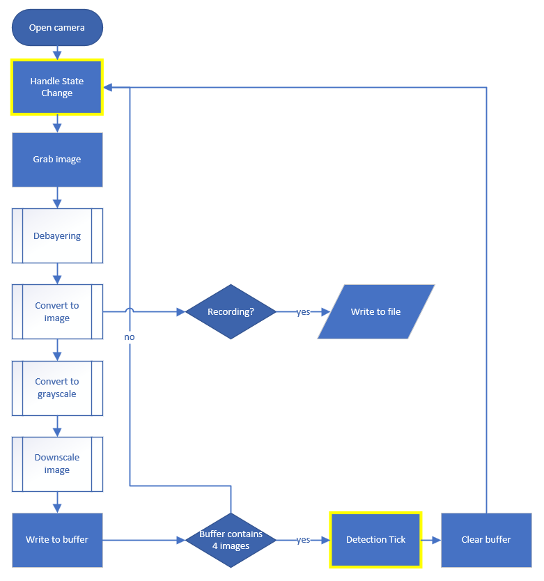
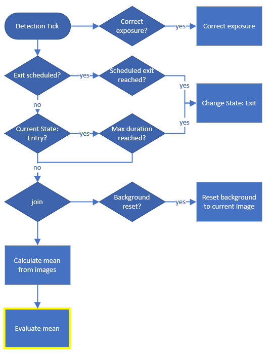
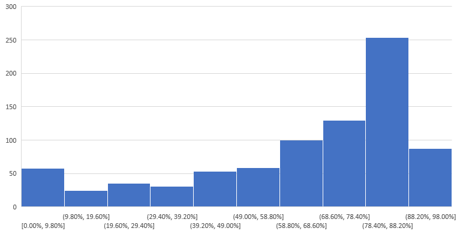
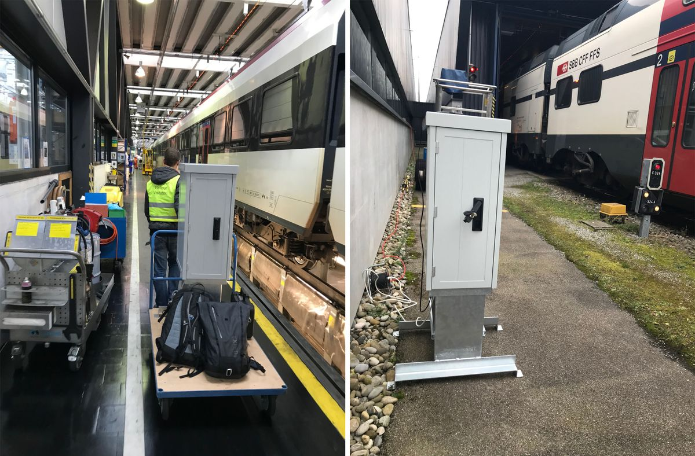
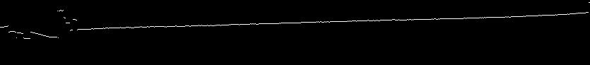
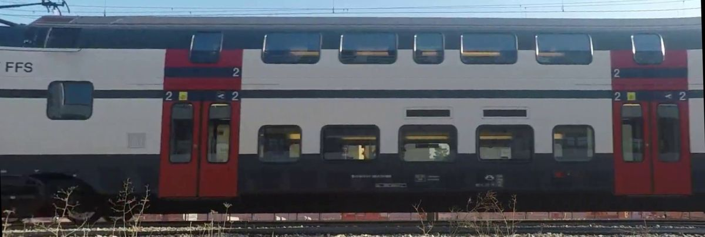
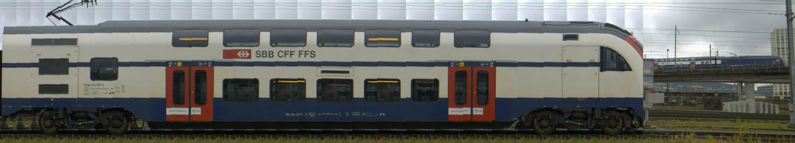

Diese Arbeit wurde als Teil eines Bachelor Studiums an der Berner Fachhochschule BFH geschrieben.
Sämtliche Projektinformationen wie diese Dokumentation, Präsentationen, Videos und der Sourcecode sind auf der
Projektwebsite unter
https://thermotrains.github.io öffentlich zugänglich.
Alle Quellen sind nummeriert [n] und im Quellenverzeichnis im Appendix aufgelistet. Grundwissen in
Informatik wird zum Verständnis dieser Arbeit vorausgesetzt. Die wichtigsten Abkürzungen und Konzepte sind im
Glossar, das ebenfalls im Appendix gefunden werden kann, erklärt.
Dieses Dokument wurde in HTML geschrieben und mit Prince zu einer PDF Datei konvertiert.
Die verwendete Schrift ist Open Sans, entworfen von Steve Matteson im Auftrag von Google.
Die Vision des Projekts ist das automatische Erkennen von fehlerhaften Isolationen an Zügen. Eine defekte Isolation
soll mit detaillierten Informationen an ein Servicecenter gemeldet werden. Weil dadurch der genaue Zustand bekannt
ist, lässt sich der optimale Zeitpunkt einer Wartung kosteneffektiv festlegen. Solch vorausschauende Wartung
(Predictive Maintenance) ist der nächste Schritt in der Industrie, um noch effizienter zu wirtschaften.
Zeit- oder distanzabhängige Wartungen entfallen.
Mit Hilfe einer Wärmebildkamera sollen die Fahrzeuge auf Wärmeverlust untersucht werden. Die Aufnahmen machen
defekte Wärmebrücken und Isolationen sichtbar. Sie liefern die Erkenntnisse, ob und wie eine Klassifizierung möglich
ist.
Aus der Vorstudie, welche die erste Phase unseres Projektes bildet, liegt ein positiver Machbarkeitsentscheid,
eine evaluierte Wärmebildkamera und der Prototyp des Post-Processings vor.
Das Resultat ist eine Gesamtlösung, die alle Teile eines Predictive Maintenance Systems abdeckt.
Daten-Akquise: Thermo-Scanner, der Züge aufnimmt während sie vorbeifahren.
Daten-Verarbeitung: Aufnahmen werden entzerrt und aufbereitet.
Daten-Analyse: Mit der Cloud Applikation "Thermoboard" kann ein Experte die strukturierten Daten analysieren.
Bisher existierten keine vergleichbaren Aufnahmen von Zügen. Leider konnten wir in der kurzen Zeit keine Züge mit
Defekten filmen, was eine Klassifizierung schwierig macht.
Als angehende Ingenieure forderte uns diese Arbeit in allen Disziplinen, von der Planung, über die Lösung
organisatorischer und technischer Herausforderungen, bis hin zum Handwerklichen. Ein Projekt also, wie es in der
realen Welt existiert. Deshalb sind wir sehr zufrieden, mit unserer Arbeit die Grundlage für vielversprechende
Optimierungen in der Energieeinsparung und der Wartung geschaffen zu haben. Unsere Auftraggeberin, die SBB,
stimmen die Resultate positiv und sie ist sehr interessiert das Projekt weiter zu führen. Wir haben gezeigt, dass
Wärmebildanalysen, dank strategisch gewählter Aufnahmeorte, im grossen Stil möglich sind. Ausserdem liefern die
Aufnahmen neue Erkenntnisse, wie die Züge im Betrieb aussehen. Wir sind also zuversichtlich, dass in Zukunft eine
Erkennung von Isolationsschäden oder anderen Defekten aufgrund von Wärmebildern möglich wird.
Inhaltsverzeichnis
Einleitung
Ausgangslage
Die Abteilung des SBB Personenverkehrs möchte bis 2025 im Rahmen ihres Energieeinsparungsprojekts 600 GWh pro Jahr
einsparen. Das AKW Mühleberg produziert im Vergleich dazu knapp 3'000 GWh pro Jahr. Das Energie- und direkt damit
verbundene Kosteneinsparungspotential ist dementsprechend enorm. Eine Massnahme aus diesem Projekt ist,
Schienenfahrzeuge automatisch auf fehlerhafte Isolationen zu prüfen. Durch die Bedingungen, denen die Materialien im
täglichen Verkehr ausgesetzt sind, kommt es vor, dass sich Isolationsteile, vor allem im Dachbereich, lösen oder
aufgrund von Materialfehlern oder Wasser- und Feuchtigkeitseintritt Schaden nehmen und zerfallen.
Vision
Die Vision des Gesamtprojekts der SBB ist das automatische Erkennen von fehlerhaften Zügen. Ein fehlerhafter Zug
soll mit detaillierten Informationen (Zug X, n-ter Wagon von vorne, betroffener Bereich, etc.) an ein Servicecenter
gemeldet werden. Weil dadurch der genaue Zustand bekannt ist, lässt sich der optimale Zeitpunkt einer Wartung
kosteneffektiv festlegen. Predictive Maintenance ist meist günstiger, weil Schäden noch nicht enstanden oder
kleiner sind. Dies trifft bei unentdeckten Wasserschäden besonders zu.
Projektidee
Mit Hilfe einer Wärmebildkamera sollen die Fahrzeuge auf Wärmeverlust untersucht werden. So kann man defekte
Wärmebrücken und Isolationen sichtbar machen. Zusätzlich soll ein Farbvideo aufgezeichnet werden. Das ermöglicht die
Defekte zu lokalisieren und Rückschlüsse auf die Ursache zu ziehen. Die beiden Kameras sollen in einem
wettertauglichen Gehäuse automatisch vorbeifahrende Züge aufnehmen. Die Aufnahmen werden danach zu einem Zugpanorama
zusammengesetzt und für die Analyse vorbereitet (entzerrt / rektifiziert).
Resultate der Vorstudie
Positive Machbarkeitsstudie: Die Machbarkeit des Vorhabens ist gegeben. Im Projekt 2 stellten
wir fest, dass das Projekt mit der heutigen Hardware, Umgebung und Prozessen realisierbar ist.
Evaluation Hardware: Mit der FLIR A65 Infrarotkamera haben wir eine Kamera gefunden mit relativ
hoher Auflösung (640x512px) und einem grossen Field of View (45°). Sie erlaubt qualitativ gute Aufnahmen von Zügen
ab einer Distanz von 5m und max. 30km/h (Schritttempo empfohlen). Die weitere Hardware für den Thermo-Scanner ist
zu evaluieren.
Prototyp Post-processing: Der Prototyp des Post-processings ist fertig und ist in der Lage
aus einem Farbvideo das entzerrte und rektifizierte Panorama eines Zuges automatisch zu erstellen.
Evaluation Standorte: Wir haben einen ersten Standort vor einer Waschanlage in Zürich Herdern
gewählt bei der wir unseren Thermo-Scanner aufstellen können. In einer 2-wöchigen Testphase sollen hier möglichst
viele Daten gesammelt werden.
Ziele Bachelor Thesis
In der zweiten Phase wollen wir uns vor allem um die Fertigstellung unseres Thermo-Scanners kümmern.
Daten-Akquise: Bau und Entwicklung des Thermo-Scanners.
Der Thermo-Scanner nimmt automatisch vorbeifahrende Züge auf und lädt diese in die Cloud.
Dabei ist er wetterfest und benötigt nur einen Stromanschluss.
Daten-Verarbeitung: Im Post-processing lassen sich automatisiert aus den Videos Panoramas von
ganzen Zügen erstellen. Die Bilder sind entzerrt und rektifiziert.
Daten-Analyse: Die Spezialisten der SBB können die aufbereiteten Zugpanoramas analysieren
und feststellen ob Defekte vorhanden sind. Es kann abgeschätzt werden, ob mit diesem Verfahren die Ziele der
SBB im Bereich Predictive Maintenance und der Energieeinsparung näher rücken.
Klassifizierung (optional): Falls wirklich Schäden durch Experten der SBB erkannt werden können,
soll ein Klassifizierungsverfahren zur Detektion dieser Schäden entwickelt werden.
Problemstellung
Da wir aber zu Beginn des Projektes feststellen mussten, dass noch gar keine Infrarotaufnahmen von Isolationsschäden
vorhanden sind, haben wir den Inhalt der Arbeit angepasst. Der Fokus der Arbeit hat sich von der automatischen
Klassifizierung von Isolationsschäden auf das Sammeln und Aufbereiten von Infrarotaufnahmen verschoben. Neu ist
das Ziel Erkenntnisse darüber zu gewinnen ob und wie Isolationsschäden mit Wärmebildkameras sichtbar sind.
Die Problemstellung ist also: Wie kann man automatisiert Infrarotaufnahmen von Zügen erstellen und diese
für eine Analyse aufbereiten?
Wie bereits erwähnt können verrutschte Isolationsmatten und Wassereinbruch Gründe für Wärmeverlust sein.
Jedoch gibt es auch viele andere Wärmebrücken, wie auf der Abbildung unten gut sichtbar ist. Die folgenden Bilder
sind bei einem Test der SBB in der Klimakammer Olten entstanden. In dieser
Klimakammer können verschiedene Aussenbedingungen simuliert werden. Ausserdem kann das Fahrzeug auch eingeschaltet
werden und somit die Betriebsbedingungen wie Heizung / Kühlung simulieren.
Weil es an diversen Orten Wärmebrücken geben kann und nicht klar ist, wie sich verrutschte Isolationen und
Wassereinbrüche auf einer Thermographie äussern, haben wir beschlossen den ganzen Zug zu analysieren und
uns nicht auf einzelne Bereiche einzuschränken.
Thermographie Test SBB
Das obige Bild zeigt gut, wie ein intakter Zug auf einer Thermographie aussieht. Die auffallenden roten
Flächen auf beiden Seiten der Türe sind die Stahlträger des Wagons, durch die auch die Warmluft geführt wird.
Weitere auffallende Wärmebrücken sehen wir im Bereich der Notausstiegfenster und natürlich der Lüftungsschlitze.
Folgende Bilder zeigen diese Stellen noch genauer.
Solche Erkenntnisse, wie wir sie aus obigen Testaufnahmen gewinnen konnten, sind wichtig, um später normal
auftretende Wärmebrücken von ungewollten Wärmebrücken unterscheiden zu können.
Neben der Problematik der Datenbeschaffung in Form von Videos ist auch der Aufnahmestandort ein wichtiger Faktor.
Es nützt nichts, wenn wunderbare Aufnahmen vorhanden sind, diese aber nur einen Bruchteil der Flotte der SBB
abdecken. Deshalb ist ein strategischer Aufnahmestandort wichtig. Der Aufnahmestandort soll in einem viel
frequentierten Gebiet liegen, durch welches jeder Zug regelmässig durchfährt. Mit Aufnahmen an wenigen solchen
Standorten soll ein Grossteil der Flotte gefilmt werden können. Die Anforderungen an den Standort sind:
langsam fahrende Züge (max. 30km/h)
min. 5m Abstand der Kamera zum Gleis
Stromanschluss und Mobilfunkempfang
Züge frequentieren den Standort häufig
Machbarkeitsanalyse
Probeaufnahmen
Die ersten Aufnahmen mit der FLIR SC620 (altes Modell, von der BFH zur Verfügung gestellt) haben gezeigt,
dass die Videos noch zu wünschen übriglassen:
Bei zu schnellen Zügen sind die Aufnahmen auf Grund der Sensorauslesegeschwindigkeit der Kamera verzerrt.
Die Kamera liest die Pixel von oben nach unten aus (Rolling-Shutter-Effekt).
Der Bild-Auslöser reagiert mit ca. 3 Sekunden Verzögerung.
Die Belichtungszeit ist nicht einstellbar.
Videoaufnahme ist umständlich (Composite Video Kabel über Konverter an PC anschliessen und dort mit einer
Applikation das Video anzeigen und mit einer anderen Software aufnehmen)
Die Temperaturspannen hingegen scheinen nicht ein Problem zu werden.
Die Kamera ist genügend sensitiv um auch bei einer grossen Spanne unterschiedliche Wärmeflächen zu erkennen.
Die SC620 führt in unregelmässigen Abständen eine automatische Rekalibrierung durch.
Dies blockiert den Videokanal für 1-2 Sekunden was unpraktisch ist, wenn gerade ein Zug vorbeifährt.
Die Züge reflektieren warme Objekte relativ stark.
Bei unseren Aufnahmen von der Seite waren zwei reflektierte Masten auf den Zügen zu erkennen.
IR TestaufnahmenMaking of IR Testaufnahmen
Mit der neu evaluierten FLIR A65 aus der Vorstudie können wesentlich bessere Aufnahmen realisiert werden.
Die sorgfältige Evaluation hat die gewünschten Resultate geliefert.
Die grundlegende Technologie die auf Microbolometer basiert ist zwar die gleiche wie bei der FLIR SC620,
aber die Aufnahmen der FLIR A65 sind trotzdem weniger schnell verschwommen und man könnte Züge bis 30km/h filmen.
Die Kamera ist vollständig automatisierbar, nur fokussieren muss man manuell. Die Belichtungszeit, automatische
Rekalibrierung, Framerate usw. können über eine API gesteuert werden.
Angeschlossen wird die Kamera über PoE (Power over Ethernet) über ein Standardprotokoll.
Designt für den Dauerbetrieb.
Testaufnahmen Bern, StöckackerMaking of Testaufnahmen Bern, Stöckacker
Mögliche Aufnahmestandorte
Als möglichen Aufnahmestandort eignen sich die Waschanlagen der SBB, welche unter anderem in Zürich, Basel und Genf
stationiert sind.
Die Waschstrassen eignen sich aus folgenden Gründen:
Züge fahren langsam: Die Aufnahmen mit der IR-Kamera drohen also nicht zu verschmieren
und wir erhalten scharfe Bilder.
Wöchentliche Reinigung: Die Züge werden normalerweisen einmal pro Woche gereinigt und
durchlaufen somit die Waschanlage häufig.
Identifizierung der Wagons: Alle Züge, ja sogar jeder Wagon ist mit einem RFID-Chip
ausgestattet. In der Waschanlage wird dieser ausgelesen. Somit wäre die Identifikation der einzelnen Wagons
sehr einfach.
Vilant Systems AG, Könizstrasse 161, 3097 Liebefeld
Zusammenarbeit abgebrochen, Lieferant RFID Reader
Meetings
Folgend eine Übersicht über abgehaltene Meetings mit unseren Partnern und Kontaktpersonen bei der SBB.
Wichtige Entscheidungen sind in einem Meeting Protokoll festgehalten oder wurden zeitnah umgesetzt.
Datum
Teilnehmer
Thema
17.11.2016
Auftraggeber, Dozent, Projektteam
Kick-Off Meeting
07.03.2017
Dozent, Projektteam, ID-Systems
Vorstellung Projekt bei den Infrarotkamera-Spezialisten von ID-Systems
05.04.2017
Projektteam, Klimaspezialisten
Vorstellung Projekt bei den Spezialisten der Klimakammer Olten
20.06.2017
Auftraggeber, Dozent, Projektteam
Status Rapport Vorphase
30.08.2017
Projektteam, Almatec
Besprechung Sonderanfertigung Gehäuse für Thermo-Scanner
06.09.2017
ID-Systems, Dozent, Vertreter SBB, Projektteam
Schulung FLIR Infrarotkamera bei ID-Systems. Einführung in Bedienung Kamera und FLIR Tools (Viewer und
Analysesoftware)
11.09.2017
Vilant, Projektteam
Skype Meeting mit RFID Lieferant betreffend Ausleihe Demogerät und Unterstützung durch Entwickler
18.09.2017
Projektteam
Startveranstaltung Bachelor-Thesis an der BFH
19.10.2017
Projektteam, Almatec
Übergabe Heizlüfter / Thermostat
10.11.2017
Experte, Dozent, Projektteam
Treffen mit Experte Dr. Harald Studer, Stand Projekt
15.11.2017
Projektteam, Waschanlage Zürich Herdern
Treffen mit Leiter Serviceanlage Herdern. Besichtigung Aufnahmestandort für 2-wöchige Aufnahmen.
Betreuer SBB, Klimaexperte, Chef Technik, Projektteam
Durchsicht der ersten Resultate mit den Spezialisten der SBB in Yverdon. Besichtigung des ICE während
Wartung.
19.12.2017
Projektteam, Waschanlage Zürich Altstetten
Aufstellen Thermo-Scanner für zweite Aufnahmephase bis 07.01.2018.
FLIR Schulung
Im Kaufpreis der FLIR Kamera ist auch eine Schulung von ID-Systems inbegriffen. Am 06.09.2017 durften wir zusammen
mit den Vertretern der SBB die Schulung in den Räumlichkeiten von ID-Systems besuchen. Die Inhalte der Schulung
waren:
Einführung Thermographie
Technologie Detektoren
Praxis (Dos and Don'ts)
FLIR Software
Der vermittelte Stoff half uns, die Kamera besser zu verstehen resp. zu bedienen und wir erhielten Klarheit über die
von FLIR bereitgestellten Hilfsmittel. Für die Klimaexperten der SBB und den Projektleiter war es zudem sehr
interessant und im Hinblick auf eine Übergabe unserer Arbeit auch sinnvoll. Die SBB weiss nun auch wie die
Infrarotkamera zu bedienen ist.
Sichtung Aufnahmen bei SBB
Nach der ersten zweiwöchigen Testphase haben wir unsere Resultate den Verantwortlichen der SBB präsentiert. Dabei
waren der Projektleiter seitens SBB, der Chef Technik (Zuständig bei Isolationsschäden) und ein Klimatechniker der
Klimakammer Olten. Wir haben die Panoramas der gefilmten Züge vorgestellt und auch einige Videos in den FLIR Tools
genauer analysiert. Die SBB ist sehr interessiert an den Aufnahmen und sieht grosses Potential für die Verwendung in
verschiedenen Bereichen. Die Resultate wurden auch SBB intern an Teammeetings und an den Auftraggeber weitergegeben.
Wärmebildaufnahmen existierten bis anhin nur von einzelnen Wagons unter kontrollierten Bedingungen und nicht im
täglichen Betrieb. Ausserdem konnte die Qualität der Aufnahmen überzeugen, denn es waren viele Details sichtbar wie
beispielsweise das feine Wagon-Skelet. Die Experten konnten auf den Aufnahmen aber keine Schäden feststellen, somit
haben wir leider keinen schadhaften Zug erwischt. Der Chef Technik versprach aber, uns beim nächsten
Isolationsschaden sofort zu informieren, damit wir den Zug filmen können.
Predictive Maintenance Event
Am 30. November fand an der FFHS (Fernfachhochschule Schweiz) ein Predictive Maintenance Event mit dem Titel
"Predictive Maintenance als zentraler Baustein der Industrie 4.0" statt. Einer der Referenten war unser Auftraggeber
Urs Gehrig, Senior Consultant Unternehmensentwicklung. In der Präsentation wurde auch unser Projekt vorgestellt. Die
SBB sieht unsere Arbeit also als strategisch wichtig an. Detaillierte Informationen zum Event finden sich auf der Website der FFHS.
Mindestens alle zwei Wochen fand ein Status Meeting mit unserem Dozent Marcus Hudritsch statt.
Besprochene Punkten waren:
Erledigte Arbeiten
aktuelle Herausforderungen
weiteres Vorgehen
Die Meetings waren sehr konstruktiv und haben es uns erlaubt auf Kurs zu bleiben.
Zeitplan
Die Grobplanung haben wir mit Hilfe eines Zeitplans erstellt. Dort sind Deadlines und Meilensteine eingetragen.
Mit dieser Planung können wir die Eckpunkte und Zeitfenster unserer Arbeit abstecken und kontrollieren,
ob wir noch gut in der Zeit liegen.
Projektplan Seite 1Projektplan Seite 2
Projektwebsite
Um den diversen Interessensgruppen unserer Arbeit diese Dokumentation und andere Ressource einfach zugänglich zu
machen, haben wir eine Projektwebsite erstellt. Diese beinhaltet das Video, diese Dokumentation, die Slides sowie
ein Link zum Source Code. Das Hosting ist gratis von GitHub bereitgestellt. Die Dokumentation und Slides Unterseiten
sind in einem eigenen Git-Repository gehalten und werden bei einem Push in den Master Branch automatisch auf Travis
gebaut und ausgeliefert.
Dieses Kapitel soll einen Überblick über die geschaffene Lösung bieten. Die Lösung entspricht dem typischen
Muster eines kompletten Systems im Feld von Predictive Maintenance. Um seine Aufgabe zu erfüllen sind folgende
Schritte durchzuführen:
Datenakquise
Datenverarbeitung
Datenanalyse
Nebst den eigentlichen Schritten müssen diese überwacht werden können. Dazu haben wir in einer zweiten Dimension
einen Maintenance Layer gebaut.
In dem jeweiligen Kapitel wird im Detail auf die drei Subsysteme eingegangen.
System Architektur
Datenakquise
Die Datenakquise passiert auf der Thermo-Scanner-Hardware. Die gesammelten Artefakte werden dann in das
Processing System übergeben in dem diese auf einen Dateiserver geladen werden. Die Akquise der Daten ist in
unserem Projekt der wichtigste sowie auch herausforderndste Faktor. Die Hardware sowie auch Software wurde komplett
durch uns zusammengebaut und programmiert.
Das System haben wir mit einer eigens gebauten Monitoring-Lösung überwacht. Aufgetretene Fehler haben wir an ein
externes Tool "Sentry" geschickt, auf welchem wir diese auswerten konnten. Den Zugang zum System haben wir mit
Teamviewer eingerichtet.
Das Akquise-Subsystem liefert folgende Daten an das Datenverarbeitungs-Subsystem weiter:
Infrarot Video
Sichtbare Lichtwellen Video
Aussentemperaturinformationen
Wetterinformationen
Metainformationen
Datenverarbeitung
Die Datenverarbeitung hat keine dedizierte Hardware. Stattdessen haben wir die Software auf unseren privaten
Rechnern laufen lassen. Zum einen wären solche Server ziemlich teuer im Betrieb und zum anderen ist das System
nicht ganz ausgereift, um es autonom zu betreiben. Die Image Processing Pipeline ist in einer
plattformunabhängigen Sprache geschrieben und könnte bei Bedarf auf irgendwelcher Hardware automatisch betrieben
werden.
Das Datenverarbeitungs-Subsystem liefert folgende Daten an das Analyse-Subsystem weiter:
Infrarot Bild mit ganzem Zug
Infrarot Bild mit einzelnen Wagen
Sichtbare Lichtwellen mit einzelnen Wagen
Sichtbare Lichtwellen Bild mit ganzem Zug
Aussentemperaturinformationen
Wetterinformationen
Metainformationen
Datenanalyse
Dieses Subsystem dient einem Experten, der sich mit den Wagenbaustrukturen auskennt, als Plattform zur manuellen
Auswertung der aufbereiteten Daten. Er hat die Möglichkeit in einer angenehmen Umgebung die Daten genauer
anzuschauen und sie zu vergleichen. Er kann zum Beispiel dasselbe Fahrzeug über die Betriebsdauer vergleichen und
sehen ob sich irgendwo ein Schaden abzeichnet. Oder er kann denselben Fahrzeugtyp unter einander vergleichen und
Unterschiede feststellen. Die Metainformationen, die ihm dazu angezeigt werden, helfen ihm zu einem Schluss zu
kommen.
Technologien
Sämtlicher Sourcecode der im Umfang dieser Arbeit geschrieben wurde, ist auf GitHub verfügbar. Da wir für
unterschiedliche Technologien und Betriebsumgebungen Software geschrieben haben, haben wir diese in verschiedene
Git Repositories aufgeteilt und unter einer GitHub Organisation angelegt:
https://github.com/ThermoTrains.
Die Repositories docs, slides und thermoboard werden bei
einem Push auf den Master Branch oder einem Pull Request auf Travis CI gebaut. Die Builds sind unter
https://travis-ci.org/ThermoTrains
verfügbar.
Das Repository classification diente als Spielwiese und enthält keinen lebenswichtigen Code für das
Projekt. Wir haben damit die weitere Stossrichtung der automatischen Klassifikation erprobt.
Der Thermo-Scanner verkörpert die Hard- und Software, um alle nötigen Rohdaten für die Analyse der Züge zu
beschaffen. Sie soll am Gleisrand aufgestellt werden und alle vorbeifahrenden Züge automatisch aufnehmen. Die
einzige Voraussetzung für den Betrieb ist ein Stromanschluss. Ansonsten soll der Thermo-Scanner autonom
funktionieren.
Anforderungen
Die Box ist wetterfest.
Benötigt nur einen Stromanschluss, funktioniert nach dem Einstecken automatisch.
Die Aufnahme startet automatisch beim Einfahren eines Zuges.
Ein Infrarot- und ein Farbvideo wird aufgenommen
Metadaten zur Aufnahme werden aufgenommen
Die Wagonnummer wird mittels RFID ausgelesen um den Zug zu identifizieren
Die Videos und Metadaten werden auf einen Server hochgeladen.
Die Box kann remote gesteuert und gewartet werden.
Kann langsam fahrende Züge aufnehmen (Schritttempo).
Die folgenden zwei Kapiteln dokumentieren im Detail, wie die dafür nötige Hard- und Software aufgebaut ist.
Ein solch autonomes System ist aufwendig in der Realisation. Die Software ist eigens von uns für diesen
Zweck entwickelt. Auch die Hardware, den Thermo-Scanner, bauten wir selber. Es versteht sich also,
dass dies viel aufwendiger ist, als ein paar von Hand gefilmte Wärmebildaufnahmen im Labor auszuwerten.
Dafür ist ein einsatzbereites System entstanden, dass, am Gleisrand aufgestellt und eingesteckt, den Betrieb
von alleine aufnimmt.
Hardware
Dieses Kapitel beschreibt wie der Thermo-Scanner beschaffen ist, die Funktionsweise wird im Kapitel
Software beschrieben.
Die gesamte Hardware ist in einem wetterfesten Gehäuse nach IP55 Standard untergebracht (Staub- / Wasserschutz). Das
Gehäuse ist eine Spezialanfertigung mit einem Sichtfenster für die Farbkamera und einer Öffnung für die
Infrarotkamera. Im Boden des Gehäuses sind Öffnungen für die Stromzufuhr und den Anschluss der externen GSM-Antenne
sowie des RFID Readers vorhanden. Der Thermo-Scanner steht aufrecht und kann, dank der soliden Füsse, bei Bedarf auch
mit Sandsäcken stabil montiert werden.
Das Innenleben ist wie folgt aufgebaut (von unten nach oben):
Temperatursensor für die Aussentemperatur (hängt unten heraus)
Steckerleiste für die Stromversorgung aller Komponenten
Heizlüfter um Kondenswasserbildung zu verhindern
Mini PC für Betrieb der Software
Tablare für die Kameras
3D schwenkbare Stative für Kameras
FLIR Infrarotkamera
Basler Full-HD Farbkamera
Thermostat, welchen den Heizlüfter steuert (ein/aus)
GSM-Antenne (ausserhalb Gehäuse) für Kommunikation
Innenleben Thermo-ScannerFront Thermo-Scanner
Komponenten
Gehäuse
Thermo-Scanner Gehäuse
Das Gehäuse ist eine Spezialanfertigung, die wir bei der Firma Almatec in Auftrag gegeben haben. Es ist wetterfest und
für das Betreiben von Elektronik im Freien geeignet. Oben befinden sich die Öffnungen für die beiden Kameras. Die
Farbkamera schaut durch ein Plexiglas und die Infrarotkamera durch ein Loch. Die Infrarotkamera darf nicht durch ein
Glas filmen, da sonst die Infrarotwellen gefiltert werden. Spezialgläser existieren zwar, sind aber extrem teuer. Um
dennoch einigermassen gegen Wassereintritt geschützt zu sein, ist die Öffnung mit einer Gummitülle abgedichtet. Auf
die Hardware im Inneren kann von beiden Seiten über eine Türe zugegriffen werden.
Die FLIR A65 Infrarotkamera wurde in der Voranalyse des Projektes evaluiert. Aufgrund des grossen FOV, der
verhältnismässig grossen Auflösung, der Möglichkeit zur automatisierten Steuerung und der Bezahlbarkeit ist es die
ideale Kamera für unser Projekt. Die Kamera ist auf einem schwenkbaren Stativ montiert und kann so ideal ausgerichtet
werden.
Die konkreten Anforderungen sind:
Nr.
Name
Beschreibung
1
Field Of View (FOV)
Die Kamera muss ein genügend grosses FOV besitzen. Der Zug soll in der Höhe komplett auf das Bild
passen. Der IC2000 ist ca. 4m hoch.
2
Auflösung
Je höher die Auflösung desto besser lassen sich die Aufnahmen bearbeiten und analysieren. Die Auflösung von
Infrarotkameras sind technologiebedingt klein, deshalb sollte eine grösstmögliche Auflösung gewählt werden.
3
Automatisierbar
Die Kamera muss automatisierbar sein, d.h. sie muss per API gesteuert und ausgelesen werden können.
Ein Netzwerkanschluss ist wünschenswert, so kann die Kamera einfach remote gesteuert werden.
4
Framerate
Die Framerate muss genügend gross sein, um ausreichend Bilder des vorbeifahrenden Zuges aufzunehmen.
Zwei aufeinander folgende Frames sollten sich dabei zu min. 25% überlappen, um ein Stitching zu ermöglichen.
Bis zu einer Geschwindigkeit von 30km/h soll dies möglich sein. Die Limitierung auf 30km/h rührt von der
Trägheit des Detektionsmaterials her (bei Microbolometer).
5
Preis
Die SBB übernimmt die Kosten für die Anschaffung und Wartung der Kamera. Deshalb müssen die Kosten im
Rahmen des Budgets der SBB liegen.
Anforderungen IR-Kamera
Evaluation
Schlussendlich haben wir zwei passende Kameras gefunden. Da der Markt nicht sehr gross ist und wir unsere
Anforderungen ziemlich genau kannten, war die engere Auswahl schnell getroffen. Auch die beiden Experten von ID
Systems, die uns bei der Evaluation unterstützt haben, schlugen ähnliche Modelle vor. Aufgrund des Budgets kamen
keine gekühlten Kameras in Frage.
FLIR A65
Optris PI 640
Auflösung
640 x 512px
640 x 480px
Field Of View
45° HFOV & 37° VFOV
60° HFOV & 45° VFOV
Framerate
30 Hz
32 Hz
Preis
8'359.85 CHF
7'462.80 USD
FLIR A65 vs. Optris PI 640
Wie aus der Tabelle ersichtlich unterscheiden sich die beiden Modelle in den wichtigsten Punkten nicht gross.
Den Ausschlag für die FLIR Kamera hat schlussendlich die kostenlose Unterstützung bei der Inbetriebnahme gegeben.
Somit haben wir mit der FLIR A65 eine IR-Kamera gefunden, die all unseren Anforderungen entspricht. Die
Einschränkungen die wir beachten müssen sind:
Züge dürfen höchstens 30km/h fahren, ansonsten verschmieren die Bilder.
Ein minimaler Abstand von 5m muss für die Aufnahmen gewährleistet sein.
Die Farbkamera nimmt dasselbe Bild wie die FLIR Kamera auf. Diese zusätzlichen Informationen helfen später bei der
Analyse. Ausserdem wird sie zum Triggern der Aufnahme (Start/Stopp) verwendet, indem wir im Video einfahrende Züge
erkennen. Auch die Farbkamera ist auf einem schwenkbaren Stativ montiert, was ein optimales Ausrichten erlaubt.
Anforderungen
Nr.
Name
Beschreibung
1
Field Of View (FOV)
Wie bei der Infrarotkamera muss auch hier das FOV genügend gross sein um den Zug in ganzer Höhe aufzunehmen.
Das Sichtfeld sollte sogar noch ein bisschen grösser sein als bei der IR-Kamera, damit für das Triggern der
Aufnahme genug Zeit bleibt.
2
Auflösung
Je höher die Auflösung desto besser lassen sich die Aufnahmen bearbeiten und analysieren.
Deshalb sollte eine grösstmögliche Auflösung gewählt werden.
3
Automatisierbar
Die Kamera muss automatisierbar sein, d.h. sie muss per API gesteuert und ausgelesen werden können.
Ausserdem soll sie für den Dauerbetrieb ausgelegt sein.
4
Framerate
Die Framerate muss genügend gross sein, um ausreichend Bilder des vorbeifahrenden Zuges aufzunehmen.
Zwei aufeinander folgende Frames sollten sich dabei zu min. 25% überlappen, um ein Stitching zu ermöglichen.
5
Preis
Die SBB übernimmt die Kosten für die Anschaffung und Wartung der Kamera. Deshalb müssen die Kosten im
Rahmen des Budgets der SBB liegen.
Anforderungen Farbkamera
Basler acA1920-25uc
Mit der Basler ace Industriekamera haben wir eine geeignete Farbkamera gefunden. Hier eine Übersicht über die
Spezifikation:
Basler acA1920-25uc
Auflösung
Full-HD 1080p
Field Of View
76° HFOV & 58° VFOV
Framerate
26 Hz
Anschluss
USB. Stromversorgung ebenfalls über USB.
Preis
756.85 CHF
Spezifikation Basler Farbkamera
Basler ist ein bekannter Hersteller von Industriekameras und geniesst einen guten Ruf. Deshalb und weil sie alle
unsere Anforderungen erfüllt, sind wir sicher die richtige Wahl getroffen zu haben.
Der Mini PC bildet die zentrale Steuereinheit auf der unsere Software läuft. Die beiden Kameras werden über den
PC gesteuert und beziehen auch den Strom von dort. Weiter sind der Temperatursensor und die externe GSM-Antenne
an den Mini PC angeschlossen.
Anforderungen
Nr.
Name
Beschreibung
1
Leistung
Verarbeitung Videostreams von zwei Kameras möglich
Komprimierung FLIR Rohdaten (16Bit Video) zu MP4 läuft performant
min. 16GB Arbeitsspeicher
2
LTE Modul
Wir brauchen Remotezugang zum Thermo-Scanner für Wartungen und den Upload der Aufnahmen.
Der Mini-PC sollte also ein LTE Modul enthalten.
3
Anschlüsse
PoE um FLIR Kamera zu betreiben
USB mit Stromversorgung für Basler Kamera
Antennenanschluss LTE-Modul
USB Anschluss für Temperatursensor
4
Dauerbetrieb
Der Mini-PC muss für den Dauerbetrieb ausgelegt sein. Möglichst wenig bewegliche Teile, robuste Komponenten und
ein gutes Klimamanagement sind nötig.
5
Montage
Möglichkeit zum Verschrauben des PC sollte vorhanden / vorgesehen sein.
6
Preis
Die SBB übernimmt die Kosten für die Anschaffung und Wartung des Thermo-Scanners. Deshalb müssen die Kosten im
Rahmen des Budgets der SBB liegen.
Anforderungen Mini PC
Spezifikation Mini-PC
Spectra PowerBox 31A0
Prozessor
Intel i7-6700TE
RAM
16GB
Harddisk
120GB SSD
Anschlüsse
PoE, USB, Antennenkabel, DisplayPort, ...
Kühlung
passiv
Weiteres
integriertes LTE Modul mit Daten SIM-Karte von Sunrise
Preis
2'764.80 CHF
Spezifikation Spectra Powerbox
Für das LTE Modul musste noch eine Daten-SIM Karte organisiert werden. Von der SBB konnten wir leider keine geeignete
SIM Karte beziehen, diese waren alle auf 10GB / Monat limitiert. Für den Testbetrieb reichte uns das leider nicht, da
wir auch Rohdaten vom Mini PC runterladen wollten. Deshalb schlossen wir bei der Sunrise ein Abo für eine unlimitierte
Daten-SIM ab.
Der Mini PC verfügt über ein LTE Modul mit zwei Antennenanschlüssen. Die mitgelieferten Antennen sind direkt am Mini
PC montiert und somit innerhalb des Gehäuses. Im Gehäuse selber gibt es überhaupt keinen Empfang. Bis zu dieser
Erkenntnis hat es lange gedauert, da zuerst die Antennen nicht geliefert wurden und wir dachten, dass LTE Modul
funktioniere nicht. Wir nahmen an, die Antennen befinden sich innerhalb des Mini PC. Als die Antennen nachgeliefert
wurden, hat jemand sie aus dem Briefkasten gestohlen. Sobald wir die Antennen dann endlich hatten, mussten wir
feststellen, dass es im Gehäuse keinen Empfang gibt.
Somit war nun klar, dass eine externe LTE Antenne benötigt wird. Die Anforderungen sind:
Nr.
Name
Beschreibung
1
Outdoortauglich
Antennen ist für den Einsatz draussen gedacht und wetterfest.
2
langes Kabel
Min. 2m langes Kabel notwendig um Antenne aus dem Gehäuse führen zu können.
3
guter Empfang
Möglichst guter Empfang auch in empfangsschwachen Gebieten.
Anforderungen LTE Antenne
Die evaluierte LTE Antenne erfüllt alle unsere Anforderungen und ist dank 90°-Kreuz-Polarisierung empfangsstark. Dank
dieser spielt es keine Rolle, wie die Antenne zum Signal ausgerichtet ist. Das lange Antennenkabel führen wir unten
aus dem Gehäuse (zusammen mit Strom usw.) und montieren die Antenne mit starkem Klebeband auf dem Dach des
Thermo-Scanners.
Antennenausrichtung
Links: sehr schlechter Empfang, Mitte: idealer Empfang, Rechts: Platzierung spielt keine Rolle
Spezifikation LTE Antenne
USL LTE-Antenne
Frequenzband
800 Mhz bis 2.7 Ghz
Polarisierung
90°-Kreuz-Polarisierung
Mobilfunktechnologien
Unterstützt LTE, 3G und 2G
Anschluss
2 x SMA, 2m Antennenkabel
Abstrahlcharakteristik
Rundstrahl
Weiteres
outdoortauglich
Preis
62.00 CHF
Spezifikation USL LTE-Antenne
Thermostat / Heizlüfter
Um Kondenswasserbildung zu verhindern ist im Gehäuse ein Heizlüfter und ein Thermostat verbaut. Bei Temperaturen unter
15°C schaltet der Thermostat den Heizlüfter ein, bis wieder 15°C herrschen. Wichtig dabei ist, dass der Heizlüfter
unten im Gehäuse und der Thermostat möglichst weit entfernt oben im Gehäuse platziert ist. Ansonsten ist man nicht
sicher, dass der ganze Innenraum genügend aufgewärmt ist. Wichtig ist auch, dass über dem Heizlüfter genügend Platz
ist, damit nichts zu heiss wird oder Feuer fangen könnte. Dank des grossen Gehäuses konnten wir alle
Sicherheitsabstände einhalten.
Links: Heizlüfter, Rechts: Thermostat
Temperatursensor
Um die Aussentemperatur zu messen, wurde ein USB-Temperatursensor TEMPer2 von PCSensor
verbaut. Wir brauchen die Aussentemperatur, um aus den Infrarotaufnahmen die genaue Temperatur berechnen zu können.
Der Sensor wird durch ein Loch im Bodenblech aus dem Gehäuse geführt. In der Praxis hat sich leider gezeigt, dass der
Sensor nicht zuverlässig funktioniert. Es müsste das gesamte Kabel aus dem Gehäuse rausschauen nicht nur das Endstück,
um eine richtige Messung zu erhalten. Wir greifen deshalb auf die Temperaturdaten einer nahe gelegenen Wetterstation
zu. Die Ungenauigkeiten, die sich dadurch ergeben, sind für unseren Fall vernachlässigbar.
Temperatursensor
Gegen Ende des Projektes haben wir eine neue Website von PCSensor gefunden, die den Sensor besser beschreibt. Zum
Zeitpunkt der Implementierung waren englische Information leider nur über ältere Gerätetypen vorhanden. TEMPer2 war
nur auf Chinesisch beschrieben. Auch gibt es seit 22. November 2017 eine neue Version der TEMPer Software. Wir haben
nun herausgefunden, dass die 2 in TEMPer2 dafürsteht, dass das Gerät zwei Sensoren hat. Einer im Gehäuse und einer
über ein Kabel.
Da unsere Messungen, wie man unten sieht, fast nie unter 14°C gelangen, gehen wir davon aus, dass wir die
Innentemperatur gemessen haben. Man sieht gut, wie die Temperatur in der Nacht konstant bei ca. 14°C verharrt, im
Verlaufe des Tages allerdings ansteigt, wenn die Aussentemperatur über 14°C war. Das auf und ab gegen Ende der ersten
Testphase deuten wir als eine Aussentemperatur, die stark unter 14°C lag, so dass der Thermostat den Heizlüfter über
längere Intervalle eingeschaltet lies. Die Zeitstempel zu denen wir die Temperaturen gemessen haben, sind leider nicht
schön linear verteilt, weil nur bei Zugdurchfahrt eine Aufnahme gespeichert wird. Die Züge fahren nicht regelmässig
durch die Waschstrasse.
Temperatursensor Histogramm
RFID Reader
Alle Waggons der SBB sind mit einem RFID Chip ausgestattet, über den sie eindeutig identifizierbar sind. Ein
detektierter Schaden könnte somit eindeutig einem Waggon oder Zug zugeordnet werden. Der Einsatz eines RFID Readers
ist also wünschenswert.
Anforderungen
Extern anschliessbar an Thermo-Scanner
Outdoor tauglich
Auslesen von Zügen die mit max. 30km/h fahren
Brauchbare API / unterstützte Protokolle für die Anbindung an Thermo-Scanner SW
Die SBB hat bereits RFID Reader im Einsatz, z.B. in den Waschstrassen. Wir haben deshalb beim Hersteller Vilant AG
nachgefragt, ob sie uns bei unserem Projekt unterstützen und wir einen RFID Reader kaufen können. Vilant bietet RFID
Reader für professionelle Anwendungen in der Industrie wie bspw. in Lagern, Logistikzentren und eben auch im
Bahnsektor. Die Produktpalette erstreckt sich von Handlesegeräten bis Hochleistungsleser, die Züge bei voller
Geschwindigkeit auslesen können. Das richtige Produkt für unsere Zwecke war also vorhanden. Nach einem ersten Gespräch
mit Vilant wurde uns ein Testgerät inklusive Unterstützung durch Entwickler in Aussicht gestellt. Die SBB war
aufgrund andere Projekte auch an einem Kauf eines Readers interessiert, deshalb haben wir auch eine Offerten-Anfrage
gestellt. Leider hat Vilant nie auf unsere Anfragen mit konkreten Ergebnissen reagiert, sondern uns immer wieder auf
später vertröstet und noch nicht einmal eine Offerte erstellt. Wir haben eine letzte Deadline für die gewünschte
Offerte und einen Workshop mit Testgerät gestellt, welche Vilant verstreichen liess. Deshalb haben wir uns entschieden
die Zusammenarbeit abzubrechen und den RFID Reader im Projekt vorerst nicht weiter zu berücksichtigen.
Es ist schade, dass wir viel Zeit in die Abklärungen für einen RFID Reader gesteckt haben ohne ein Resultat zu
erzielen. Für das erwähnte Projekt der SBB, das auch einen RFID Reader benötigt, wird derzeit bei einem anderen
Anbieter eine Offerte eingeholt. Evtl. ergibt sich da etwas. Auf jeden Fall ist unsere Software so gebaut, dass
weitere Sensoren problemlos eingebunden werden können. Und unser Aufnahmestandort ist an einer Waschstrasse, in
welcher alle RFID-Chips der Waggons ausgelesen werden. Möglicherweise kann man die Daten aus der Waschstrasse mit
unseren Aufnahmen matchen (z.B. über Timestamps). Dies verfolgen wir momentan aber nicht aktiv weiter und fokussieren
uns auf die Aufnahmen und deren Analyse.
Die Software des Thermo-Scanners ist mit modernen Paradigmen des Softwareengineerings gebaut. Einfachheit,
Stabilität, Geschwindigkeit und vor allem Erweiterbarkeit waren die Kriterien, die wir beim Design immer wieder
überprüft und umgesetzt haben.
Software Landschaft
Um die vielfältigen Anforderung an die Entwicklung der Software abzudecken, haben wir über den Verlauf dieser Arbeit
um unsere Hardware eine ganze Software-Landschaft aufgebaut.
Continuous Integration
Zu einem guten Entwicklungsprozess gehört Continuous Integration. Da es für die verwendeten Technologien und
Frameworks keine Gratisdienste gibt und wir selber keine Server besitzen, die diese Aufgabe übernehmen können,
haben wir den Thermo-Scanner selber als Continuous Integration Server eingesetzt. Startet die Thermobox, wird
automatisch der HEAD commit aus dem Git repository auf dem master Branch ausgecheckt. Dann werden die NuGet
Dependencies aktualisiert. Somit kann anschliessend der Release Build durchgeführt werden. Alle Assemblies erhalten
die korrekte Versionsnummer die im Repository in der Datei SharedAssemblyInfo.cs eingecheckt ist. Weil
wir aber nicht andauernd die Version erhöhen möchten, um diese bauen zu lassen, hängen wir auch den Commit Hash hinten
an. Dieser String kann mit folgendem Git Befehl erzeugt werden:
git describe --long --tags
Version mit Git Commit Hash erzeugen Befehl
Dies erzeugt einen String wie diesen: 1.0.0-52-ge078b31. Diese Versionsnummer ist deswegen wichtig,
weil wir in den Logs auf diese zurückgreifen. Dazu mehr im Kapitel Logging.
Unit Testing
Um die verschiedenen Komponenten und insbesondere die Bildanalyse Algorithmen zu entwickeln, haben wir, wo es Sinn
macht, TDD (Test Driven Development) eingesetzt. Seit Visual Studio 2017 Update 5 gibt es in der Enterprise Edition
(welche wir über Microsoft Imagine via Schulaccount beziehen können) Live Unit Testing. Dieses nette Feature
erkennt live, welche Unit Tests von der Code-Änderung betroffen sind und führt diese nach einem Build automatisch
aus. Das Resultat wird gleich links neben den Zeilennummern im Editor angezeigt.
Screenshot Live Unit Testing
Zu beachten ist, dass Visual Studio dabei sämtlichen Dateiänderungen folgt. In unserem Build wurde anfänglich
jedes Mal die Datei SharedVersionInfo.cs generiert, welche die aktuelle Versionsnummer enthält. Dies hat
den Build jedes Mal neu getriggert. Somit hat Visual Studio non-Stopp gebuilded und die Unit Tests ausgeführt. Nach
dem hilfreichen Feedback auf eine Frage
in der Visual Studio Developer Community, konnten wir aber auch diesen Issue beheben, in dem wir den Build nur
triggern, wenn es die Datei noch nicht gibt. Zudem löschen wir diese zu Beginn eines Builds, damit sie dann auch
wirklich neu generiert wird.
Logging
Um auch später nachvollziehen zu können was in der Software passiert, ist ein umfängliches Logging unumgänglich.
Wir setzen dazu log4net ein. Die Konfiguration des Loggings ist für alle Konfigurationen dieselbe und wird
geteilt. Somit müssen kleine Anpassungen an der Konfiguration nicht überall nachvollzogen werden. Die Log Dateien
werden pro Komponente in eine Datei im Pfad C:\Thermobox\logs\ abgelegt. Eine Zeile im Log enthält
folgende Informationen:
Datum
Uhrzeit auf die Millisekunde genau
Assembly Name
Version
Git Commit Hash
Log Level
Nachricht
Eine Log Zeile sieht dann als Beispiel so aus:
2017-11-20 09:06:44,724 TemperatureReader.exe-1.0.0-1-gb652480
[INFO] Received message on channel cmd:capture:start: 2017-11-20@09-06-44
Beispiel Log Zeile
Wird eine Log Datei zu gross, wird diese automatisch umbenannt und es wird eine neue Datei begonnen. Wir haben ein
Threshold von 10 MiB gewählt. Dieser wurde eigentlich nur von der VisibleLightReader-Komponente erreicht, weil wir
dort Debug Logs einsetzen, um den Detektionsalgorithmus laufend zu verbessern. Gesamthaft haben wir über die zwei
Testphasen ca. 154 MiB an Logdateien gesammelt.
Auf einer Logzeile wird der Assembly Name aufgeführt. Dies mag redundant erscheinen, weil dieser ja auch bereits in
der Logdatei enthalten ist. Allerdings starten mit dem Start Script alle Komponenten miteinander und lassen diese
auch auf dieselbe Konsole schreiben, damit man nicht 6 verschiedene Fenster offen haben muss um diese zu überwachen.
Im Normalbetrieb starten die Komponenten im Hintergrund. Somit hätte man eigentlich keine Möglichkeit die Logs
aggregiert zu sehen. Man kann höchstens ein tail auf die einzelnen Dateien machen. Also haben wir ein
PowerShell Script geschrieben, dass sämtlichen Logdateien folgt. Zudem färbt es die verschiedenen Loglevels auch
gleich ein. Also erscheint eine Exception auch sofort rot. Die Entwicklung des Scripts war nicht ganz einfach, weil
pro Logdatei ein Thread gestartet werden muss, der einer einzelnen Logdatei folgt und dessen neuen Logs zurück auf die
Hauptkonsole schreibt. Diese Lösung könnte eventuell auch für andere Projekte interessant sein.
Um das Logging muss man sich bei einem Wiederbetrieb der Kabine als erstes nicht kümmern. Logs werden nur lokal
abgelegt. Auch die Scripts zur aggregierten Ansicht der Logs nehmen zusätzliche Komponenten Logs automatisch
auf.
Remote Access
Um aus der Ferne auf den Mini-PC und die Hardware zu zugreifen, haben wir einen Teamviewer Server installiert. Dieser
ermöglicht es mit einer Partner ID und einem Passwort darauf zuzugreifen. Teamviewer bietet das beste
Benutzererlebnis verschiedenster Remote Access Lösungen. Auf die Standard-Windows-Remote-Desktop-Lösung können wir
nicht zugreifen, weil der Server direkt mit einer öffentlichen IP im Internet steht, welche nicht statisch ist.
Teamviewer darf für nicht kommerzielle Zwecke gratis eingesetzt werden. Sobald die SBB das Projekt weiterführt,
müsste ein Lizenz angeschafft werden, sofern noch kein besteht.
Hardware Monitoring
Wir stellen unsere Hardware an einem Ort auf, an dem es externe Einflüsse gibt, die wir nicht unter Kontrolle haben.
So kann z.B. jemand den Kasten ausstecken, Regen kann hineingelangen und einen Kurzschluss erzeugen oder er
verliert die Netzwerkkonnektivität. Wir möchten also überwachen können, ob die Thermobox läuft. Also brauchen wir
ein Tool zur Überwachung der Uptime.
Weiter möchten wir die Temperatur der Hardware überwachen, um eventuelle konstruktionsbedingte Wärmestaus frühzeitig
zu erkennen, bevor etwas anfängt zu schmelzen. Die Hardware ist draussen und kann nur in den vorgegebenen Temperaturen
betrieben werden. Durch eine Fehlfunktion des Heizlüfters oder Thermostats könnte das Innere des Gehäuses auch
überhitzen. Oder der Mini PC erzeugt so viel Hitze, dass diese nicht abgebaut werden kann. Einen Lüftungsschlitz nach
aussen gibt es nämlich nicht. Der einzige undichte Ort ist der Kabelschlitz im Boden des Gehäuses. Also möchten wir
die Temperatur des Mini-PCs überwachen können.
Um Erkenntnisse über die Performance der Software zu erlangen und eventuell zu erkennen, dass das System
überlastet ist, möchten wir auch die CPU Last sowie den Memory Verbrauch analysieren können. Die
Performance-intensivsten Abläufe sind folgende:
Bildanalyse ob ein Zug im Bild ist
Aufnahme Full HD Farbvideo mit Live H.264 Kompression
Aufnahme Infrarot Bilder
Clamping Infrarot Bilder von 16 bits zu 8 bits
Nachträgliche H.264 Kompression der Infrarot Bilder
Diese Abläufe können sich auch in die Quere kommen, was wir erkennen möchten. Zudem möchten wir erfahren, wann der
Arbeitsspeicher ausgeht und eventuell auf die Disk geswapped wird.
Um diese Daten aufzunehmen, haben wir nach einer Monitoring-Lösung gesucht. Dazu gibt es diverse Self-Hosting
Lösungen wie z.B. das alt bekannte Nagios, wovon es mittlerweile auch schon diverse Forks gibt. Diese Lösungen
können wir allerdings nicht selber betreiben, weil uns die Server dazu fehlen. Ausserdem ist ein solches System
dafür ausgelegt eine ganze Serverlandschaft zu überwachen und nicht nur einen einzigen. Deswegen ist die
Installation und Konfiguration einer solchen Lösung sehr aufwändig. Diesen Aufwand wollten wir uns, wenn möglich,
ersparen.
Die andere Option: Eine SaaS Monitoring-Lösung verwenden. Das Problem hierbei ist, dass es keine Anbieter
gibt, die das gratis machen. Oder jedenfalls nicht so, dass wir mehrere Monate lang auf den Server zugreifen können.
Deswegen haben wir uns entschlossen, eine eigene Lösung zu schaffen, die wir auf dem Server von Sebastian Häni hosten
können. Die entworfene Lösung ist so simpel gehalten wie möglich und ist nicht sehr erweiterbar. Die Funktionsweise
ist so, dass die Thermobox alle 5 Minuten ein Datentupel im JSON Format mit folgenden Werten an den Server per HTTP
POST schickt:
CPU Temperaturen in Celsius pro Core
CPU Auslastung in Prozent pro Core
Memory Auslastung in Prozent
Freier Festplattenspeicher in Bytes
Hostname
Der Server hängt das Datentupel an eine Datei. Das Frontend liest dann diese Datei aus und erzeugt eine HTML Seite
die vier Graphen im Browser darstellt. Oben links wird dargestellt, ob die Box online ist. Oben rechts werden die
CPU Auslastung sowie die CPU Temperatur überlagert dargestellt. Unten links sieht man die Memory Auslastung und
unten rechts den Verlauf des freien Speicherplatzes.
Screenshot Monitoring
Weil es ab und zu vorkam, dass die Software nicht so funktionierte wie gewünscht, hat sich die Festplatte gefüllt
und es konnten keine Aufnahmen mehr gemacht werden. Bevor dies der Fall ist, schickt der Server eine E-Mail an
uns mit der Information, dass weniger als 5 GiB freier Speicherplatz zur Verfügung steht.
Screenshot Monitoring E-Mail-Benachrichtigung
Die Anforderungen an den Monitoring-Server sind folgende:
PHP 7+
Schreibberechtigung auf data/stats.txt
Um den Server in Betrieb zu nehmen, müssen nur die Sourcen auf den Webserver kopiert und die
Schreibberechtigung eingerichtet werden. Im ping.ps1 Script muss die richtige URL konfiguriert werden
damit die Datentupel an den richtigen Ort gelangen. Es gibt keinen Mechanismus der die alten Daten löscht. Dazu muss
manuell die Datei stats.txt geleert werden. Die Graphen stellen jeweils nur die letzten 48 Stunden
dar. Details über ältere Posts können mit dem Button "Show more" angezeigt werden.
Der Client, also in unserem Fall der Thermo-Scanner, führt das Script ping.ps1, welches ebenfalls im
Repository zu finden ist, alle 5 Minuten aus. Dieser allgemein als Cron-Job bekannte Prozess kann auf dem Mini-PC,
auf welchem Windows 10 läuft, mit dem Task Scheduler gesteuert werden. Folgend zwei Screenshots wie der Task
konfiguriert wurde:
Im Register Actions wurde eine Action hinzugefügt. Diese ist vom Typ "Start a program". Das Programm ist
powershell und die Argumente sind
-NoLogo -File C:\repos\thermotrains\src\main\csharp\Scripts\ping.ps1 -WindowStyle Hidden".
Das Ping Script ping.ps1 ist in PowerShell geschrieben. Es liest die CPU Temperaturen, CPU
Auslastungen und die Memory Auslastung vom OpenHardwareMonitor aus. Um diese Angaben zuverlässig und einfach
auslesen zu können, gibt es von Windows leider keine vorgegebenen Befehle oder Services. Das Auslesen des
verbleibenden Speicherplatzes ist jedoch mit PowerShell Hausmitteln möglich.
Eine generell funktionierende Lösung, um die Sensoren der Hardware auszulesen, gibt es nicht. Jeder Hersteller
programmiert in seinen Treibern eigene Interfaces, um die Werte auszulesen. Die Software OpenHardwareMonitor versucht
diese verschiedenen Interfaces zusammen zu tragen und stellt diese im einfachen Tool dar. Zusätzlich bietet
OpenHardwareMonitor die Option an, sich beim Systemstart selber im Tray auszuführen. Dies haben wir auf dem Mini-PC
so konfiguriert. Wenn OpenHardwareMonitor läuft, kann über die angebotenen WMI Objekte (Windows Management
Instrumentation) auf die Sensorwerte mit simplen Queries zugegriffen werden. Als Beispiel, hier ein Befehl welcher
alle CPU Kern Temperaturen in Kelvin ausliest:
CPU Temperatur Auslesen PowerShell ScriptScreenshot OpenHardwareMonitor
Error Monitoring
In den jeweiligen Komponenten können Errors, Warnings oder gar nicht abgefangene Exceptions
auftreten. Um diese nicht umständlich im Log suchen zu müssen, sollen diese einfacher eingesehen werden können. Zudem
sollte bei neuen Fehler gleich eine E-Mail-Benachrichtigung versendet werden.
Dazu haben wir Sentry integriert. Sentry ist ein Dienst, welcher selber gehostet werden kann oder auf sentry.io
betrieben wird. Da die Gratis-Lizenz mit ihren Einschränkungen für uns ausreicht, müssen wir keine Kosten
aufwenden. Wenn eine Warnung oder Fehler auftritt, wird dieses Event an die Sentry API gemeldet. Sentry aggregiert
dann die Events zusammen und schickt bei neuen unentdeckten Events eine E-Mail an uns.
Screenshot Sentry
Der Dienst ermöglicht es uns die Fehler sofort zu beheben nachdem sie aufgetreten sind. Zudem können wir die
Warnungen dazu benutzen, um zu sehen wie häufig und wann gewisse Meldungen auftauchen. Zum Beispiel schicken wir
immer eine Warnung, wenn ein Zug entdeckt, wurde dieser aber "anscheinenden" nach zu kurzer Zeit wieder aus dem Bild
gefahren ist, dass das eigentlich gar nicht möglich ist. Wenn wir dann sehen, dass dies immer während der Dämmerung
passiert ist das ein guter Hinweis, was womöglich mit der Bildanalyse schiefläuft.
Um Sentry einzubinden, mussten wir einen eigenen log4net Appender bauen. Die existierenden Appender sind zu alt und
werden nicht mehr gewartet. Sollte sich in naher Zukunft nichts mehr in diesen Projekten tun, erwägen wir unseren
Appender selber als NuGet Package zu veröffentlich, damit andere auch davon profitieren können.
Der Sentry Account müsste im kommerziellen Betrieb von der SBB neu erstellt werden. Danach kann im Projekt ein
neuer DSN (Data Source Name) generiert werden. Dieser muss dann auf dem Mini PC in der Umgebungsvariable mit dem
Namen SENTRY_DSN abgelegt werden.
Interne Kommunikation
Durch die Anbindung von verschiedenen Komponenten und die verteilte Entwicklung sowie möglicher Integration von
weiteren Komponenten je nach Projektverlauf haben wir uns für eine Microservice-Architektur entschieden. In einer
solchen Architektur braucht es in der Regel einen Message Broker beziehungsweise eine Message Queue. Um dies
umzusetzen, haben wir auf Redis gesetzt. Der Redis Server läuft ständig auf dem Mini PC und fährt automatisch hoch
sobald Windows startet.
Redis kann zwar mehr als nur Broker spielen, wir brauchen diese Features allerdings nicht. Redis zeichnet sich aus
durch die Einfachheit sowie die grosse Anzahl an production ready Bibliotheken zur Integration in alle gängigen
und zum Teil auch nicht gängigen Technologien. Ausserdem gibt es ein Command Line Interface mit welchem bequem
manuell Nachrichten in die Queue geschrieben und diese auch ausgelesen werden können.
Der Einsatz von Redis bringt also das Pattern PubSub (Publish/Subscribe) hervor. Die entwickelten Komponenten
laufen als eigenständige Prozesse und wissen nicht welche anderen Prozesse laufen. Will eine Komponente mit einer
anderen kommunizieren, muss sie die Nachricht in die Redis Message Queue schreiben und somit publishen. Will sie
Nachrichten lesen, muss sie sich auf eine Queue subscriben.
Um auf der Entwicklungsumgebung nicht den Redis Server installieren zu müssen, gibt es ein Redis Docker Image
welches den Server in einem Container startet. Somit kann eine Instanz ohne Konfiguration on Demand gestartet werden.
Auf dem Mini PC haben wir zuerst auch mit Docker den Redis Server eingerichtet, weil die Windows Version des Redis
Servers nicht offiziell von Seite Redis unterstützt wird. Jedoch ist zum Zeitpunkt dieser Arbeit Docker immer noch
nicht sehr stabil, um Container auf einer Serverplattform laufen zu lassen. Für eine Entwicklungsumgebung ist es ok,
aber auch nicht ideal. Deshalb haben wir schliesslich den Redis Server, der Microsoft offiziell unterstützt, als
Windowsdienst installiert.
Während der Entwicklung der Komponenten haben wir uns schlussendlich auf folgende Menge an Befehlen geeinigt.
capture:start
capture:stop
capture:abort
capture:pause (obsolet)
capture:resume (obsolet)
delivery:upload
delivery:compress
kill
Im Diagramm unten ist dargestellt, wie eine Aufnahme des Zuges auf der Kommunikationsebene abläuft. Es sind sämtliche
Nachrichten ersichtlich. Wie man sieht, geht jede Nachricht immer zuerst an den Redis Server, welche sie dann weiter
an die Komponenten, die sich darauf subscribed haben, weiterleitet. Die einzelnen Komponenten werden später erklärt.
Sequenzdiagramm Aufnahme
Komponenten Architektur
Damit es einfach ist neue Komponenten zu erstellen, haben wir ein Common-Modul erstellt welches Code bereitstellt,
der für alle Komponenten derselbe ist. Im Common Modul gibt es eine abstrakte Klasse
ThermoBoxComponent von welcher konkrete Komponenten erben können. Eine Komponente kann dann definieren,
welchen Kanälen sie folgen möchte und welchen Handler sie anstossen möchte, wenn eine Nachricht eintritt. Zudem gibt
es eine Funktion um Nachrichten zu publishen.
Die gewählte Architektur hat sich sehr bewährt. Es ermöglicht den selektiven Betrieb einzelner Komponenten so, dass
diese isoliert getestet werden können. Zudem kann man auch mal eine Komponente ausschalten, wenn man das Feature
gerade nicht braucht. Zum Beispiel können wir den Uploader nicht starten, wenn wir nicht möchten, dass Dateien auf den
Server hochgeladen werden. Es ist keine Konfigurationsänderung notwendig.
Das einzige Problem das wir mit dieser Architektur festgestellt haben ist, dass wir Kameras haben, auf welche mit
nur einem Windows Prozess zugegriffen werden kann. Die erste Idee war, dass wir eine Komponente haben, welche die
Farbkamera ausliest, um zu erkennen, ob gerade ein Zug in die Waschstrasse fährt. Eine zweite Komponente greift auf
dieselbe Kamera zu um die Bilder in ein Video aufzunehmen sobald der Zug erkannt wurde. Dies war leider nicht
möglich. Also mussten wir in diesem konkreten und einzigen Fall vom Microservice-Pattern abweichen und beide
Funktionalitäten in derselben Komponente implementieren.
Reader Komponenten
Unter den Reader Komponenten verstehen sich Komponenten die eine Aufnahme tätigen oder eben einen Sensor auslesen.
Die Reader Komponenten subscriben sich auf die Channels capture:start, capture:stop und
capture:abort.
Beim Start Befehl wird ein Timestamp im Format YYYY-MM-DD@HH-mm-ss
übergeben. Diesen Timestamp verwenden die Reader, um einen eindeutigen Dateinamen zu erzeugen. Wenn diese Dateinamen
später asynchron über diverse Wege wieder zusammengetragen werden, können sie wieder zusammen gruppiert werden und
man weiss zu welcher Aufnahme sie gehören. Würden die Reader selber den Timestamp erzeugen, ist durch die asynchrone
Natur der Redis Message Queue nicht gegeben, dass dieselben Timestamps zum Zuge kommen.
Beim Stopp Befehl beenden die Reader ihre Aufnahme und schicken die erzeugte Datei an den jeweiligen Channel weiter.
Beim Abbruch-Befehl werden die Reader die Aufnahme abbrechen und alle angefallenen Dateien aufräumen. Ein Abbruch
kann unter anderem stattfinden, wenn die Trigger Komponente sich dafür entscheidet die Aufnahme zu starten, weil sie
glaubt, der Zug sei eingefahren. Später wird dann aber gemerkt, dass es ein Fehlalarm war und die Aufnahme
abgebrochen werden sollte. Würde der Trigger warten bis er sich ganz sicher ist, könnte bereits ein Teil des Zuges
durch gefahren sein ohne dass er aufgenommen wurde.
Um manuelle Befehle zu auszuführen, haben wir ein PowerShell Script Control.ps1 erstellt mit welchem
interaktiv die möglichen Befehle abgesendet werden können.
IRReader
Subscription:
capture:start
capture:stop
capture:abort
capture:pause
capture:resume
kill
Publish:
delivery:compress
delivery:upload
Die Aufgabe des IRReaders ist, die Bilder FLIR Kamera aufzunehmen. Bevor die eigentliche Komponente gestartet wird,
wird zuerst die Kamera gefunden. Die Suche nach der Kamera geschieht asynchron. Um die Testingzyklen sowie
grundsätzlich den Start der Komponente zu beschleunigen haben wir folgendes Verfahren entwickelt, um möglichst
schnell mit der Kamera zu verbinden.
Die Kommunikation zur Kamera handeln wir mit dem FLIR ATLAS SDK ab. Im Hintergrund verwendet das SDK einen GenICam
Treiber für die Kommunikation. FLIR hat aber weitere proprietäre Parameter in die Kamera verbaut, weswegen wir nicht
ein Standard GenICam-SDK verwenden.
Zuerst wird ein Discovery Thread gestartet der in einem Event Handler auf gefundene Kameras reagiert. Wird die
richtige Kamera gefunden, welche dem Suchstring enspricht, wird der originale Thread mit dem Resultat der Kamera
beendet und retourniert. Die Kamera die gefunden werden soll, ist in der Konfiguration unter dem Key
IR_CAMERA_NAME abgelegt. Für unsere Kamera lautet dieser "FLIR AX5". Wird die Kamera nicht innerhalb von
5 Sekunden gefunden, verwenden wir die Emulator-Kamera, die das FLIR ATLAS SDK anbietet. Das heisst, das
Discovery-Verfahren dauert maximal 5 Sekunden oder weniger.
Die Emulator-Kamera ist hilfreich, wenn man die Komponente testen will ohne, dass man die Kamera im Netzwerk in
Betrieb nimmt. Das erzeugte Bild ist ein Test-Infrarotbild bei welchem sich ein Balken auf und ab bewegt, sowie einige
Noise-Pixel die sich zufällig verteilen. Diese Noise Pixel stellen sicher, dass jedes Frame andere Statistikwerte
aufweist. So können Entwickler testen ob Minimum, Maximum, Median und so weiter für jedes Frame neu und richtig
berechnet werden. Diese Werte sind wichtig um das Bild dem Betrachter mit einer sinnvollen Temperaturspanne anzeigen
zu können. Macht die anzeigende Software keine laufende Anpassung der Spanne sind die Noise-Pixel nicht immer
sichtbar.
Bild des FLIR ATLAS SDK Kameraemulators
2018-01-11 10:51:40,520 IRReader.exe [INFO] Discovering cameras
2018-01-11 10:51:45,640 IRReader.exe [WARN] Fallback to emulator camera
2018-01-11 10:51:47,125 IRReader.exe [INFO] Stopping discovery
2018-01-11 10:51:47,125 IRReader.exe [INFO] Connecting to camera: Camera Emulator
2018-01-11 10:51:48,229 IRReader.exe [INFO] Connecting to redis on localhost
2018-01-11 10:51:48,893 IRReader.exe [INFO] Connected to redis
2018-01-11 10:51:48,894 IRReader.exe [INFO] Subscribing to cmd:capture:start
2018-01-11 10:51:48,904 IRReader.exe [INFO] Subscribing to cmd:capture:stop
2018-01-11 10:51:48,905 IRReader.exe [INFO] Subscribing to cmd:capture:abort
2018-01-11 10:51:48,905 IRReader.exe [INFO] Subscribing to cmd:capture:pause
2018-01-11 10:51:48,906 IRReader.exe [INFO] Subscribing to cmd:capture:resume
2018-01-11 10:51:48,907 IRReader.exe [INFO] Subscribing to cmd:kill
IRReader Startup Log
Die Infrarot Kamera wird in der Regel eine Betriebstemperatur von ca. 40 - 50° C einnehmen. Die Kamera hat eine
interne Mappingtabelle sowie ein Kalibrierungsverfahren, um die Eigentemperatur zu kompensieren damit diese keine
Einflüsse auf das aufgenommene Bild haben. FLIR nennt den Prozess NUC (Non Uniformity Correction). Ein NUC dauert
ca. 0.2 - 0.5 Sekunden und blockiert die Aufnahme. Zeichnet man Bilder auf, hat man während eines NUCs ein schwarzes
Bild. Die Standardkonfiguration der Kamera ist, dass alle 4 Minuten ein NUC gemacht wird um eventuelle sich
veränderte Temperaturen zu kompensieren. Zusätzlich startet die Kamera den NUC, wenn sich die Eigentemperatur um
einen einstellbaren Threshold verändert hat. Gerade wenn man die Kamera in einem Büro in Betrieb nimmt, wird sie
anfänglich ca. jede Minute einen NUC durchführen bis sie die normale Betriebstemperatur erreicht hat. Der NUC ist
übrigens hörbar, weil der Verschluss mechanisch betätigt wird. Es hört sich wie ein Klicken an.
Wir möchten in unseren Aufnahmen keine schwarzen Frames haben. Deshalb wird unmittelbar bevor eine Aufnahme
gestartet wird ein NUC durchgeführt. Dann können wir davon ausgehen, sofern die Kamera länger als ein paar Minuten in
Betrieb ist, dass der nächste NUC erst in 4 Minuten durchgeführt wird. Der anfängliche NUC dauert auch nicht zu lange,
so, dass wir eventuell sogar den Anfang verpassen würden. Die NUC Einstellungen können via die Parameter
NUCMode, NUCTempDelta und NUCIntervalFrames eingerichtet werden.
Die Aufnahme steuern wir über den FLIR ATLAS SDK Recorder. Dieser kann Videos von der Kamera aufnehmen. Diese
werden im FLIR proprietären Format SEQ abgespeichert. Das SEQ Format ist nichts anderes als aneinandergehängte TIFF
Dateien, welche mit Rohdaten der Kamera befüllt sind. Zusätzlich gibt es EXIF Metadaten. Da die Kamera mit 14 Bit
aufnimmt und keine Kompression stattfindet, sind die resultierenden Dateien sehr gross. Es gibt keine Möglichkeit
die Bilder sofort zu komprimieren.
Formel zur Berechnung der SEQ-Dateigrösse
Nehmen wir in der vollen Auflösung und Framerate auf, werden die Dateien schnell so gross, dass sie gar nicht mehr
auf der Disk Platz hätten. Deshalb haben wir die Framerate auf ein Frame pro Sekunde verringert. Die Auflösung zu
verringern macht keinen Sinn, weil wir dann Bilddetails verlieren.
Die Kontrolle der Kamera über das FLIR ATLAS SDK ist etwas umständlich. Die Control-Library ist nicht sehr stabil. Es
kann zu zufälligen Exceptions kommen, wenn ein Befehl abgesetzt wird. Um Abhilfe zu schaffen, haben wir eine Retry
Methode gebaut, der ein Callback zur Befehlsausführung mitgegeben wird sowie ein Callback zur Überprüfung ob es
erfolgreich war. Diese Retry Methode führt den Befehl so lange wiederholt aus, bis keine Exception geworfen wird
und der zweite Callback sagt, dass es funktioniert hat. Leider können wir nicht in den Code hineinschauen, weil er
proprietär und obfuscatet ist.
/// <summary>
/// Tries to execute an action. If an exception is thrown, it tries again until a
/// threshold is reached.
/// </summary>
/// <param name="action">Action with potential exception thrown</param>
/// <param name="testSuccess">Function to test the success of the action</param>
private static void Retry(Action action, Func<bool> testSuccess)
{
var tries = 0;
const int maxTries = 5;
while (tries < maxTries)
{
try
{
action.Invoke();
if (testSuccess.Invoke())
{
return;
}
throw new Exception("Camera state was not as expected");
}
catch (Exception ex)
{
Log.Warn("Exception while executing camera command", ex);
}
tries++;
Log.Warn($"Failed executing camera command (try {tries} of {maxTries})");
Thread.Sleep(10);
}
Log.Error($"Could not execute command after {tries} tries.");
}
FLIR ATLAS SDK Code zur wiederholten Befehlsausführung
Wird die Aufnahme gestoppt, erzeugt der IRReader drei Dateien.
SEQ Datei: Video-Rohdaten
JPG Datei: Snapshot des ersten Frames des Videos
JSON Datei: Aktuelle Device Parameter
Die SEQ Datei wird via delivery:compress an den IRCompressor übergeben, welcher die Datei komprimiert,
damit dieser übertragen werden kann. Das Übertragen der Rohdaten ist erstens zu langsam, weil Züge schneller
vorbeifahren als wir hochladen könnten und zweitens haben wir nicht genügend Serverspeicherplatz im die Dateien
abzuspeichern. Zu beachten ist, dass die SEQ Datei nur die Sensorwerte enthält. Es sind noch keine Temperaturwerte
erzeugt worden. Um diese zu berechnen müssen weitere Parameter hinzugenommen werden.
Die JPG Datei dient uns zum Vergleich des komprimierten Videos. Damit sehen wir, ob der Kompressionsalgorithmus
keine offensichtlichen Fehler beinhaltet. Weiter dauern das Kompressionsverfahren sowie der Upload einige Zeit.
Möchten wir trotzdem schon sehen was aufgenommen wurde, müssten wir warten. Dieser Snapshot kann allerdings sehr
schnell und ohne langwierige Kompression hochgeladen werden. So sehen wir direkt, ob und welcher Zug sich im Bild
befindet.
Die JSON Datei enthält die 315 verfügbaren Geräteparameter der FLIR A65 Kamera die zur Zeit der Aufnahme
konfiguriert waren. Je nach Einstellung resultieren andere Bilder. So gibt es zum Beispiel einen High Gain oder Low
Gain Modus. Diese Angaben dienen uns als Kontext bei der Interpretation und Weiterverarbeitung der aufgenommenen
Bilder. Wir speichern diese Informationen bei jeder Aufnahme mit ab. Enthalten sind auch Sensorinformationen der
Kamera, wie z.B. Gehäuse- oder Sensortemperatur. Zur Serialisierung der Kamera-Parameter haben wir eigene Modelklassen
geschrieben die wir befüllen und dann mit Json.NET serialisieren.
{
"Parameters": [{
"Name": "SensorTemperature",
"Description": "FPA temperature in Celsius",
"Value": "28.4"
}, ...]
}
Ausgelesen Device Parameter in JSON Format
Hier ein Auszug aus den Parametern die für uns zum Teil relevant sind:
Aus technischen Limitierungen erfüllt der VisibleLightReader zwei Aufgaben was gegen das Microservice Prinzip
verstösst. Die Komponente liest zum einen den Bildstream der Basler Kamera, um festzustellen, ob sich ein Zug in das
Bild hineinbewegt hat. Hat sie einen Zug detektiert, meldet sie mit capture:start dies an alle
Komponenten weiter so wie auch sich selber. Selber startet sie nämlich dann auf den Befehl die Aufnahme in eine
Videodatei. Der Name der Komponente kommt davon, dass wir damit die für das menschliche Auge sichtbaren Wellenlängen
aufnehmen. Dass Licht und Wellenlängen nicht dasselbe ist, ist uns bewusst. Der Name ist also wissenschaftlich nicht
ganz korrekt.
Die Komponente benutzt zur Kommunikation das Basler Pylon SDK. Da die Firma Basler einer der führenden Hersteller
von Industriekameras ist, ist ihr SDK auch weit aus durchdachter und stabiler als das Pendant von FLIR.
Man merkt, dass FLIR einige Patterns vom Pylon SDK abgekupfert hat.
Die technische Limitierung ist, dass man nur von einem Windows Prozess auf die über USB angeschlossene Basler
Kamera zugreifen kann. Der Prozess blockiert die Kamera und kein zweiter kann mehr darauf zugreifen. Das heisst, wir
mussten den Image Grab Loop so schreiben, dass die Bilder zum einen vom Erkennungsalgorithmus verarbeitet
und zum anderen in eine Videodatei geschrieben werden. Das setzt natürlich voraus, dass die
Erkennungsphase nicht länger dauert als die Aufnahme eines Frames. Ansonsten verlieren wir entweder Frames oder der
Buffer wird unendlich gross.
Das folgende Flow Chart erklärt, wie wir das gelöst haben. In der Implementation haben wir eine Klasse
Recorder geschrieben, welche intern einen State hat, ob sie am Aufnehmen ist oder nicht. Der Image Grab
Loop schickt die Bilder dann an eine Instanz der Klasse. Der Recorder weiss dann selber, ob er das Bild verwerfen
oder aufnehmen soll.
Die Prozesse, die gelb umrandet sind, werden später in einem weiteren Flow Chart erklärt. Den gesamten Flow in einem
einzigen Flow Chart darzustellen, ist leider zu unübersichtlich.

VisibleLightReader: Grab Loop Flow Chart
Zuerst finden wir die richtige Kamera mithilfe des Namens, welcher in der Konfiguration unter dem Key
VISIBLE_LIGHT_CAMERA_NAME abgelegt ist. Dazu mussten wir glücklicherweise keinen asynchronen
Discover-Service bauen. Im Pylon Framework gibt es einen synchronen Aufruf, der das Kameraobjekt liefert. Nach dem
Öffnen konfigurieren wir die Kameraparameter für uns passend. Wir stellen ein, dass nur 1 Frame pro Sekunde
aufgezeichnet werden kann. Das machen wir, weil wir ansonsten zu grosse Dateien erhalten, für welche wir kein
Speicherplatz haben. Ausserdem haben wir in der Nacht sowieso nicht mehr als 1 FPS, weil die Beleuchtungszeit so
hoch wird. Den Image Grabber stellen wir so ein, dass er immer das aktuellste Frame der Kamera holt. Somit baut
sich kein versteckter Buffer unendlich auf. Den Grab Loop entwickeln wir wie erwähnt selber, weil wir mehr Kontrolle
brauchen.
In der Methode HandleStateChange verarbeiten wir Befehle die asynchron von extern hineingekommen sind.
Das sind also Befehle der Message Queue.
VisibleLightReader: Handle State Change Flow Chart
Es geht nun weiter in den Detektionsalgorithmus. Dies ist eine eigene Klasse. Die 4 übergebenen Bilder von vorher
sind bereits vorverarbeitet. Sie sind in Graustufen, verkleinert und enthalten nur den Ausschnitt des Bildes, auf
welchem sich die Räder des Zuges befinden.
Gecroppter Background mit GleisEinfahrt Zug aufgenommen von Basler Kamera
Das Erkennen des Zuges mit dem ganzen Bild ist sehr schwierig, wie auch unnötig. Der Ausschnitt verändert sich nicht
solange die Kabine nicht bewegt wird. Im gesamten Hintergrund gibt es ca. 10 weitere Gleise auf welchen Zügen
vorbeifahren können. Zu Beginn haben wir den Ausschnitt nicht ausgeschnitten. Dass wir dann mehr aufnehmen, war uns
klar. Da wussten wir aber noch nicht, dass wir an einer neuralgischen Stelle aufnehmen werden, wo jede Minute
mindestens ein Zug im Hintergrund vorbeifährt.
In der Detektionsklasse ist das Hintergrundbild abgelegt. Also das Bild der Kamera, auf welchem sich kein Zug
befindet. Wir nennen es von nun an Background. Der Background wird beim Start sowie in regelmässigen Abständen immer
wieder neu abgelegt. Wenn wir den Background ablegen, führen wir zuerst einen Blurfilter aus. Danach berechnen wir die
arithmetische durchschnittliche Helligkeit. Wir speichern also nur einen Wert zwischen 0 und 255.
Um auf dem Bild immer etwas zu sehen, müssen wir periodisch die Beleuchtungszeit korrigieren. In der Nacht
haben wir Beleuchtungszeiten von einer Sekunde und am Tag von wenigen Millisekunden. Aber auch mit der
Beleuchtungszeit von einer Sekunde haben wir, je nach eingeschalteten Flutlichtern, zu wenig gesehen. Deswegen weisen
wir die Kamera an den Gain automatisch zu korrigieren. Diese automatische Korrektur dauert im Extremfall bis
zu zwei Sekunden. Wir geben den Befehl zur automatischen Korrektur selber. Würden wir es der Kamera überlassen
dies periodisch zu tun, könnten wir im falschen Moment eine Background-Momentaufnahme machen, was dann fälschlicherweise einen Zug detektiert.
Auf dem folgenden Diagramm sieht man die von uns in der ersten Testphase aufgezeichneten Beleuchtungszeiten
(links) und Gains (rechts) aggregiert auf einen Tagesverlauf.
Basler Kamera Belichtungszeit und Gain
Haben wir alle diese State-Geschichten hinter uns, können wir die eigentlichen Bilder evaluieren.
Nachfolgend das Flow Chart, mit den bis dort durchlaufenen Schritten:

VisibleLightReader: Detektion Flow Chart
Bisher haben wir also einen Background-Durchschnittswert und neu auch die Durchschnittswerte der aktuellen
Bilder. Wir können jetzt vergleichen, ob der aktuelle Wert dunkler ist als der Backgroundwert. Zugräder sind nämlich
dunkler als der Schotter und produzieren einen deutlich sichtbaren Einfall der Bildhelligkeit. Auf dieses einfache Verfahren
erst mit der Zeit gekommen, nachdem viele andere Ansätze fehl schlugen. Die Umstände der echten Welt sind viel abstruser, als
man sich das im Labor vorstellt. Der Kasten ist diversen Umständen ausgeliefert und muss damit umgehen können.
Sonnenaufgang und Sonnenuntergang
Regen und Schnee erzeugen Noise im Bild, welcher potentiell detektiert wird
Wenn Schnee liegt, sieht das Bild anders aus
Personen auf dem Fussweg vor der Kabine
Regen kann an der Scheibe Tropfen bilden
Nebel kann die Sicht verschlechtern
Reflexionen vom Prime Tower können Kaustiken bilden
In der Nacht vorbeifahrende Züge werfen Licht auf den Boden
Unterschiedliche Fahrtrichtungen
Unser erstes Verfahren war mit dem Backgroundbild die sich veränderten Pixel zu tracken und festzustellen, ob von
links oder rechts ein genug grosses Objekt hineinfährt. Das hat schon gar nicht funktioniert, wenn man den ganzen
Bildbereich analysiert. Man könnte zwar meinen man muss einfach einen genug hohen Raum festlegen. Anders gesagt
die Bounding Box müsste eine gewisse Höhe haben. Nur steht im Hintergrund das Bahnviadukt von Zürich. Wenn
gleichzeitig ein Zug auf einem der unteren Gleise und einem auf dem oberen Gleis durchfährt haben wir eine Bounding
Box die genau gleich hoch ist wie ein Zug der durch die Waschstrasse fährt. Jetzt kann man sich fragen, wie häufig
das vorkommt. Wir mussten feststellen, dass das ca. alle 5 Minuten passiert. Ansonsten hätte dieses Verfahren sehr
gut funktioniert soweit wir es getestet haben.
Nachdem wir den Analyseausschnitt auf das untere Gleis gelegt haben, mussten wir feststellen,
dass in der Nacht vorbeifahrende Züge einen starken Lichteinfall auf den Boden werfen.
Dies hat den Detektor eine Aufnahme auslösen lassen.
Von anderen Zügen einfallendes Licht
Wir mussten also ein einfacheres Verfahren entwickeln, welches nur die Helligkeit zum Background vergleicht.
Mit fleissiger Überwachung des Detektionsalgorithmus und ständigem Nachschrauben sowie den praktischen Tools, die wir
geschaffen haben, konnten wir die Thresholds ständig verbessern. Das nachfolgende Flow Chart zeigt auf was passiert,
wenn der Threshold erreicht wurde oder nicht. Zur Übersicht wurde der End-State weggelassen. Wenn kein Pfeil von einem
Kasten weggeht, endet der Flow dort.
VisibleLightReader: Evaluierungs-Flow Chart
Die Detektorklasse meldet die Befehle über C# Events an die Klasse die den Grab Loop beherbergt. Diese erzeugt dann
asynchron den Befehl welchen sie an die Message Queue weiterleitet.
Um den Detektionsalgorithmus herum entstanden eine ganze Menge an Konstanten die wir nach besten Kenntnissen
vorkonfigurierten und dann während der Testphase ständig nachkorrigierten. Die aufgeführten Werte sind die
schlussendlichen Resultate davon.
Konstante
Beschreibung
Einheit
Wert
NoBoundingBoxBackgroundThreshold
Solange sich nichts bewegt, wird der Background neu initialisiert
Sekunden
30
MinTimeAfterExit
Minimale Dauer zwischen zwei Aufnahmen
Sekunden
60
MinTimeAfterEntry
Minimale Dauer einer Aufnahme. Ist sie kürzer wird sie abgebrochen
Sekunden
60
MaxRecordingDuration
Maximale Dauer einer Aufnahme
Minuten
45
AutoExposureTimeout
Zeit, die die Kamera braucht, um die Belichtung einzustellen
Sekunden
2
ExitThreshold
Anzahl Bestätigungen, dass kein Zug mehr da ist
Einheit
8
ExitScheduleTime
Dauer des Auslaufens der Aufnahme (damit das Video das Wegfahren des Zuges aufnimmt)
Sekunden
20
Konstanten des Detektionsalgorithmus
Insgesamt sind wir mit der Erkennungsrate des Verfahrens zufrieden. Es detektiert zwar eindeutig zu viele Bilder als
Zug, jedoch wird kein einziger Zug verpasst. Wenn man folgende Beispiele anschaut, ist es aber erstaunlich, wie gut es
bei schlechten Sichtverhältnissen funktioniert.
Fälschlicherweise Aufnahme gestartetAufnahme wurde gestartet
Die Erkennungsrate lag am Ende der ersten Testphase mit verbessertem Algorithmus bei 99%.
27 Aufnahmen wurden gestartet und hochgeladen, auf welchen kein Zug war. In der zweiten Testphase
wurden 178 von 178 Zügen erkannt. Die Anzahl falsch erkannter Züge lag bei 49. Als Grund dafür sehen wir das
schlechte Wetter sowie die Wassertropfen, die sich auf dem Sichtglas festgesetzt haben. In einer
neuen Version der Kabine wäre ein Glas, welches keine Tropfen ansetzt, sicher besser. Allenfalls würde auch
ein kleines Dach Abhilfe schaffen (welches wir eigentlich ursprünglich bei Almatec bestellt hatten).
Die Sensitivität liegt also bei 0.78, trotz dem schlechten Wetter mit Sturm Burglind. Die Spezifität ist
schwierig zu beziffern, weil wir künstlich etwa ein Zeitintervall für richtig negativ erkannte Bilder festlegen
müssten. Oder es müssten in sämtlichen Bildern Features als richtig negativ erkannt und gezählt werden, was unmöglich ist.
Nachdem wir die erste Durchlaufwaschstrasse besucht haben, bemerkten wir, dass Züge zuerst an die Waschstrasse
heranfahren und dann dort ein paar Minuten verweilen. Während dieser Zeit kommunizieren Sie mit dem
Waschstrassenleiter oder bedienen die Steueranlage, je nach Typ der Anlage. Für uns heisst das, dass auf dem Video
der Zug zu Beginn einfach steht und sich nicht bewegt. Das erzeugt unnötig grosse Videodateien. Deshalb hatten wir
die Idee das Video zu pausieren und fortzusetzen, wenn sich der Zug in Bewegung setzt. Das hat bei gutem
Wetter gut funktioniert. Wir haben die Bewegung auf dem Bild mit dem vorherigen Bild analysiert und konnten so sagen, ob sich etwas bewegt hat.
Leider funktionierte das Verfahren bei Nacht nicht, da diverse Lichtquellen Bewegung
verursachen. Dasselbe bei schlechtem Wetter, wenn Regentropfen oder Schnee ins Bild kommen. Deshalb haben
wir die Pausierung und Fortsetzung wieder entfernt. Die Reader selber sind aber noch in der Lage zu pausieren und
fortzusetzen, wenn ein manueller Befehl eintrifft.
TemperatureReader
Subscription:
capture:start
capture:stop
capture:abort
kill
Publish:
delivery:upload
Um unseren TEMPer2 Temperatursensor auszulesen, mussten wir das USB HID (Human Interface Device) konsumieren. Vom
Hersteller gibt es nur eine Bedienersoftware ohne Code Beispiele oder Support für Entwickler. Glücklicherweise
haben wir ein .NET Codebeispiel gefunden, welches jedoch etwas veraltet ist. Wir haben die Konstanten, die der
Autor gefunden hat übernommen und den Code neu geschrieben. Im Artikel
Code Project: Temper USB Thermometer in C# wurde allerdings von einem älteren
TEMPer Gerät ausgegangen, welches nicht zwei Sensoren hat. Deswegen haben wir anfangs nicht gemerkt, dass wir
eigentlich den falschen Sensor auslesen.
Beim Befehl capture:start macht der TemperatureReader nichts anderes als sich den übermittelten
Timestamp merken. Würde er nämlich bereits jetzt die Temperatur auslesen und mit delivery:upload
weiterschicken, hat ein späterer Abbruch durch capture:abort keine Folgen mehr und die Datei wäre
bereits auf dem Server. Erst bei capture:stop zeichnet der Sensor die Temperatur in eine Datei auf die
er dann weiter schickt.
WeatherReader
Subscription:
capture:start
capture:stop
capture:abort
kill
Publish:
delivery:upload
In der zweiten Aufnahmephase haben wir uns entschieden den TemperatureReader nicht mehr zu verwenden, weil die
Messdaten nicht brauchbar sind. Um die aufgenommenen IR Bilder trotzdem auswerten zu können haben wir den
WeatherReader implementiert der aktuellen Wetterdaten von OpenWeatherMap
herunterlädt.
OpenWeatherMap bietet eine gratis API an, um das aktuelle Wetter abzufragen. Um alte Daten abzufragen, müsste man
bezahlen. Deswegen haben wir uns entschieden die Daten jeweils dann abzufragen, wenn die Aufnahme gemacht wird.
Durch das müssen wir nicht bezahlen. Die Daten können über einen HTTP GET Request abgefragt werden:
Der WeatherReader setzt eine Internetverbindung voraus. In der Zeit als das LTE Modul ausgefallen ist, hatten wir
somit keine Wetterdaten sammeln können. Leider werden bei der kostenlosen Variante die Wetterdaten nur alle 2 Stunden aktualisiert.
Etwas unschön ist, dass die Wetterdaten nur alle 2 Stunden aktualisiert werden, wenn man nicht
zahlt.
Der API Key wird auf dem Mini PC in der Umgebungsvariable OPEN_WEATHER_MAP_API_KEY abgelegt, damit
dieser nicht in einer im Repository eingecheckten Datei gespeichert werden muss.
Delivery Komponenten
IRCompressor
Subscription:
delivery:compress
kill
Publish:
delivery:upload
Die Bilder von der FLIR Infrarotkamera können mithilfe des FLIR ATLAS SDKs leider nur als SEQ Datei abgespeichert werden.
Diese Dateien sind zu gross, um sie in vernünftiger Zeit über eine Mobilfunkantenne zu übertragen.
Eventuell käme es dann zu einem nicht aufholbaren Rückstand in der
Übertragungsqueue. Der andere Grund ist der begrenzte Speicherplatz des Servers, auf den die Dateien übertragen werden.
Dieser verfügt nur über 50 GiB Speicherplatz. Dies ist jedoch ein Soft-Limit wie wir bemerkt
haben. Wir möchten also die SEQ Dateien in ein anderes Format komprimieren, um die Daten zu übertragen. Da es sich um
aufeinander folgende Bilder handelt, würde sich ein Videoformat anbieten. Das proprietäre Format von FLIR SEQ mussten
wir selber reverse engineeren, um die Inhalte zu verstehen und auslesen zu können. FLIR hat kein Interesse diese
Innereien zu dokumentieren oder Gratissoftware anzubieten, die diese konvertieren kann. Es gibt nämlich Bezahltools von
FLIR, die aber mehrere zehntausend Franken kosten. Deswegen haben wir es selber entwickelt.
Das SEQ Format ist eigentlich nichts anderes als mehrere rohe TIFF Bilder hintereinander gehängt. Die FLIR Kamera
nimmt Bilder mit 14 Bit Auflösung pro Pixel auf. Diese Pixel werden mit zwei Null-bits mit 16 Bit abgespeichert.
Wir können mit dem FLIR ATLAS SDK auf diese rohen Daten lesend zugreifen. Allerdings erhalten wir ein Byte-Array.
Das heisst, wir müssen dieses in ein ushort-Array umkonvertieren und jeweils zwei Bytes mergen. Das müssen wir für
jedes Bild im Video machen. Jetzt haben wir Bilder mit 16 Bit pro Pixel in einem Format das wir weiterverarbeiten
können. Das Problem ist nun, wenn wir aus diesen Graustufen Bildern ein Video machen möchten, müssten wir einen Codec
finden der 16 bit Graustufen unterstützt. Das gibt es leider nicht in einem breit unterstützten Codec. Apple hat die
ProRes Codec Familie die bis zu 12 Bit sampeln kann. Wir müssen also die 16
respektive 14 Bits auf die gängige Samplerate von 8 bits herunterbringen.
Die Rohdaten aus der SEQ Datei sind absolute und linear verteilte Sensorwerte. Das heisst der Wert 0 entspricht dem
niedrigsten Sensorwert und 16'384 (214) entspricht dem höchsten. Wenn wir ein Zug aufnehmen, geht dessen
Temperaturspanne nicht von 0 bis 16'384, sondern bewegt sich im Bereich von wenigen Celsius. Die kältesten Objekte
sind so kalt wie die Aussentemperatur und die heissesten Objekte, die Bremsen und Achsen, bis zu 40°C. Züge fahren
idealerweise nicht mit Vollgas auf die Waschstrasse zu machen eine Vollbremsung, was die Bremsen
zum Glühen bringen würde.
Mit dieser Erkenntnis haben wir ausprobiert, was es heissen würde, wenn wir die minimalen maximalen Pixelwerte auslesen
und die Werte mit dem Offset "clampen". Nach dem Clamping nehmen wir die ganze Range und skalieren sie auf 8 Bit.
Dabei können wir auch gleich den Präzisionsverlust berechnen.
Formel zur Berechnung des Präzisionsverlusts in Prozent
Sämtliche Verluste haben wir in diesem Histogramm beider Testphasen aufgezeigt. Die Y-Achse stellt die Anzahl Bilder
dar.

IRCompressor Histogramm Präzisionsverlust in Prozent
Man sieht, dass der Verlust in der Regel zwischen 78% und 88% liegt. Wir gewinnen also nicht viel
dabei. Man muss allerdings folgendes berücksichtigen. Die Kamera liefert im HighGainMode eine Temperaturgenauigkeit
von 0.01°C (Temperaturspanne von 160 (-25° bis 135°C) geteilt durch 16'384). Bei einem Verlust von 100% können wir
die Temperatur mit einer Genauigkeit von 0.625°C angeben. Bei einem Verlust von 80% bei 0.125°C.
Für unsere Auswertungen später ist diese Genauigkeit ausreichend.
Nachdem wir die Bilder zu 8 Bit Graustufen konvertiert haben, können wir sie mit h.264 encodieren und erhalten somit
eine sehr kleine Datei die auch direkt im Browser im Cockpit angeschaut werden kann. Den Offset- und
Skalierungsfaktor den wir zum Clamping benutzt haben speichern wir in den Metadaten der MP4 Datei damit die SEQ
Datei wieder rekonstruiert werden kann wenn auch mit Verlust.
Ein Problem ergab sich während dem Betrieb. Wenn die aufgenommen SEQ Datei sehr gross war, hat der IRCompressor die
CPU zu 100% ausgelastet um das Video zu encodieren. Das hatte zur Folge, dass der VisibleLightReader keine
Aufnahmen mehr machen konnte, weil er nicht mehr genug schnell seine eigene Aufnahme encodieren konnte. Somit
endeten diese Videos als schwarze Frames. Der Bildanalyseteil hat aber wie bis anhin funktioniert, weil das
Betriebssystem dem Prozess genug Priorität gegeben hat. Das Encoding passiert jedoch in einem separaten Thread der
über EMGU.CV zu OpenCV von FFmpeg gesteuert wird. Somit hatten wir keine Kontrolle über die Priorität dieser Threads.
Als Gegenmassnahme haben wir zum einen mit dem C# Profiler den Code soweit wie möglich optimiert. Dies ergab ein
merkbarer aber vernichtend kleinen Performance Boost. Wir haben uns dann entschlossen, die Framerate der IR Videos
auf 1 Frame zu setzen. Danach konnten wir die Videos innerhalb einer Minute konvertieren. Da wir das Video sowieso
nur zum Stitching verwenden, spielt dies keine Rolle. Wir haben es nicht von Beginn an so gemacht. Denn 30 FPS Videos
bei Projektpartnern zu zeigen kommt besser an als ein Video mit 1 FPS. Die Hardwaelimitation hat uns also davon
abgehalten.
Uploader
Subscription:
delivery:upload
kill
Publish:
keine
Die Uploader Komponente hört auf Nachrichten im Kanal delivery:upload. Die Dateien werden auf einen
FTP Server hochgeladen und anschliessend in den Papierkorb verschoben. Die Zugangsdaten zum FTP Server sind in der
Umgebungsvariable THERMOBOX_FTP abgelegt in der Form username:password@server.
Die Dateien werden anschliessend nicht einfach gelöscht, sondern in den Papierkorb verschoben. Damit bietet sich
die Möglichkeit Möglichkeit nachzuschauen, welche Dateien auf dem Mini PC existiert haben, falls vielleicht etwas mit
dem Upload schiefgegangen ist. Auf Windows kann dann eingestellt werden, wie gross der Inhalt des Papierkorbs maximal
sein darf. Ist das Limit überschritten, leert Windows automatisch die ältesten Dateien. So können wir den
Festplattenspeicherplatz optimal ausnutzen und trotzdem sicherstellen, dass sie nie vollläuft. Ausser ein Programm
erstellt eine einzige Datei, die den verfügbaren Speicherplatz alleine ausnutzt.
Um Dateien von einer .NET Applikation in den Papierkorb zu verschieben, gibt es bedauerlicherweise kein einfaches
Interface. Zum einen kann man ein Shell32 Objekt erstellen, welches auf den Papierkorb zeigt und die Datei dort hin
verschieben. Damit das klappt, muss man aber zuerst in einem STA Thread (single-threaded apartment) sein, welches
unsere Komponenten nicht sind.
Die auf den FTP Server hochgeladenen Dateien lesen wir im Thermobox Cockpit aus und zeigen sie im Browser an.
So kann live mitverfolgt werden, was gerade aufgenommen wurde.
CLI Utils
Während der Projektarbeit sind wir immer wieder auf sich wiederholende Arbeiten gestossen, die wir automatisiert
haben. Diese kleinen CLI Tools haben wir auch in die .NET Solution integriert damit diese auch vom gemeinsamen Code
profitieren können.
SeqConverter
Das SeqConverter CLI Programm dient zur Konvertierung von FLIR SEQ Dateien zu MP4 oder umgekehrt. Zudem kann es
schwarzweisse MP4 Videos in Falschfarben Videos konvertieren.
Im Modus SEQ zu MP4 macht das CLI Tool genau dasselbe wie der IRCompressor.
Im Modus MP4 zu SEQ werden die Metainformationen der MP4 Datei ausgelesen um die SEQ Datei zu
rekonstruieren. Dies dient dazu, dass wir verifizieren können, ob unser Kompressionsverfahren funktioniert.
Vorher und nachher sollten dieselben Temperaturwerte berechnet werden. Auch können wir so visualisieren, was der
Präzisionsverlust effektiv ausmacht, indem wir die zwei Dateien in den FLIR Tools vergleichen können. Das FLIR ATLAS
SDK bietet keine Möglichkeit an, SEQ oder auch nur einzelne Bilder mit Signaldaten zu erstellen, an. Das heisst
wir mussten die SEQ Datei bit für bit selber erstellen. Damit wir das konnten mussten wir zuerst die essentiellen Tags
der Metadaten finden, damit die SEQ Datei valide ist und von den FLIR Tools erkannt und gelesen wird. Mithilfe von
ExifTool und einem Hex Editor und einer langen Nacht konnten wir das nötige Verständnis aufbauen.
Als Einstiegspunkt diente das veraltete Spezifikationsdokument von FLIR für einzelne
Bilder mit angehängten Signaldaten. Das fehlende Puzzlestück war die Framerate des Videos. Ist diese gesetzt,
erkennt FLIR Tools die Datei als Video. Fehlt sie, wird nur das erste Frame angezeigt. Die Kenntnis, welches Tag
Feld und welchen Datentyp die Framerate hat, haben wir zurück ins ExifTool fliessen lassen. Phil Harvey, der
Maintainer von ExifTool, hat kurz später eine neue Version erstellt die nun die Framerate von SEQ Dateien auslesen
kann. Sebastian Häni wurde dankend in den Release Notes erwähnt.
Das Verfahren zur Erstellung der SEQ Datei ist nun jedoch sehr einfach geraten nachdem wir das Format verstanden
haben. Der Header der SEQ Datei enthält wichtige Informationen die von der Kamera respektive durch das FLIR ATLAS
SDK geschrieben werden. Jedoch sind diese Informationen immer dieselben bei gleichbleibender Kamera. Das einzige
was sich ändert sind dynamische Anzeigeparameter und Temperaturberechnungsparameter die in den FLIR Tools durch den
Klick auf "Auto" sowieso neu berechnet werden. Wir können also getrost immer den binär identischen Header
verwenden. Danach können wir jedes Frame einzeln an den Binärstream anhängen nachdem wir sie durch den
Skalierungsfaktor geteilt und den Offset dazu addiert haben.
Im Modus MP4 zu MP4 muss ein weiterer Parameter zur Farbpalette angegeben werden. Der SeqConverter
akzeptiert ein Graustufenvideo und wendet eine Falschfarbenpalette an. Innerhalb von OpenCV gibt es bereits eine
ganze Reihe von Paletten welche aber nicht wirklich gut aussehen. Deswegen
unterstützen wir davon nur die Palette Hot. Neben dieser haben wir die Palette die schöne Palette von FLIR namens
Iron implementiert. Weil es keine zu 100% genaue mathematische Definition der Palette gibt haben wir die 256
Farbwerte in einer Map abgelegt. Somit können wir die nicht so ansehbaren Graustufenvideos in mit Farben versehen
um diese an unsere Partner weiterleiten zu können damit sie diese in Präsentation aufnehmen können. Zudem können
wir die Falschfarbenbilder auch weiter an das Thermoboard schicken.
FLIR Iron Color Palette
ExtractFrames
Das ExtractFrames diente uns während der Nachbearbeitung und zur Erstellung von kurzen Testvideos anhand unseres
Testmaterials. Dieses Tool kann schnell n Frames aus einem Video extrahieren und in einem Ordner ablegen.
Thermobox Cockpit
Die vom Uploader hochgeladenen Dateien möchten wir mit einfachen Mitteln einsehen können, um nachvollziehen zu
können, ob die Datenakquise richtig funktioniert. Die Dateien werden asynchron auf den Server geladen was heisst,
dass man partielle Aufnahmen bereits ansehen kann. Das Cockpit ist eine Webapplikation, die im Browser links eine
Liste aller Artefakte darstellt. Diese werden zuerst nach Datum und dann nach Zeitpunkt zusammengefasst. Dies kann
anhand der Dateinamen der Artefakte gemacht werden. Klickt man ein Artefakt an wird es rechts angezeigt.
Es gibt eine simple REST API die die Artefakte auf die auf dem Dateisystem verfügbar sind sammelt und zurückgibt.
Mit Javascript bauen wir dann die Liste der Artefakte auf. Auf ein Framework haben wir bewusst verzichtet, weil das
Cockpit eigentlich nie mehr sein soll als ein Debug Tool.
Um den Datenschutzanforderungen der SBB Folge zu leisten, haben wir die Webapplikation hinter einen simplen
Kennwortschutz gestellt. Auf den Aufnahmen sind zum Teil auch Personen erkennbar die im Zug sitzen. Zudem sind
die Zugnummern lesbar. Jemand könnte also eine Inventarliste aller Fahrzeuge der SBB aufbauen. Die Passwörter
werden in einer Konfigurationsdatei abgelegt.
Um den Thermo-Scanner aufzubauen muss man einige Dinge beachten und einrichten. Dazu haben wir eine Checkliste
verfasst, welche eine Person Schritt für Schritt durch den Aufbau am Gleis führt. Wir haben diese Anleitung bei
unserem Aufbau selber verwendet um nichts zu vergessen.
Sollten irgendwelche Konfigurationen auf dem Thermo-Scanner geändert werden oder Server umgezogen werden, müssen
einige Dinge beachtet werden. Dazu haben wir ein Manual zur Software des Thermo-Scanners geschrieben. Es enthält
eine Beschreibung der Konfiguration auf dem Scanner, die Umgebungsvariabeln die gesetzt werden können und eine
Anleitung wie man die Webservices installiert. Somit sollten bei einer Projektweiterführung keine Unklarheiten
bestehen.
Aufnahmen
Der fertige Thermo-Scanner ist nun strategisch geschickt zu platzieren, um einerseits möglichst viele und anderseits
möglichst gute Aufnahmen zu erhalten. Wie schon erwähnt, eignen sich hierfür Waschanlagen, da Züge hier oft
(wöchentlich) und langsam durchfahren. Wichtige Bedingung ist ein Stromanschluss. Die möglichen Standorte
waren also aufgrund der kleinen Anzahl schnell gefunden.
Um beim Aufbau keine Überraschungen zu erleben, haben wir die nötigen Schritte in einer Checkliste festgehalten. Die
Logistik ist aufwendig, deshalb sollten Fehler vermieden werden.
Standort Zürich Herdern
Der erste Standort in Zürich Herdern wurde von der SBB vorgeschlagen, da dort eine Aussensteckdose vorhanden ist.
Zürich Herdern ist eine Serviceanlange, die auch eine Durchlaufreinigung betreibt. Die Voraussetzungen wären also
erfüllt. Leider mussten wir bei der Besichtigung feststellen, dass der Mindestabstand von 5m zum Gleis nicht
einzuhalten ist. Somit passte nicht der ganze Zug aufs Bild. Möglichkeiten für eine alternative Platzierung waren
auch nicht gegeben, da Masten oder andere Gleise dies verunmöglichten. Und wir haben bereits erste Erfahrung mit dem
Aufbau und der Inbetriebnahme des Thermo-Scanners gemacht. Auch die Checkliste konnten wir testen und für gut
befinden. Bei den Testaufnahmen mussten wir auch feststellen, dass das Starten der Aufnahme noch nicht korrekt
funktioniert. Für den nächsten Standort mussten wir also noch unsere Parameter anpassen (min. Aufnahmedauer, max.
Aufnahmedauer, usw.).

Links: Transport, Rechts: Thermo-Scanner zu nahe am Gleis
Standort Zürich Altstetten
Glücklicherweise konnten wir zeitnah unseren definitiven Standort finden, unweit des ersten Standortes. Vor der
Durchlaufreinigung in Zürich Altstetten konnten wir den Thermo-Scanner im idealen Abstand zum Gleis platzieren. Auch
der Stromanschluss in einer nahe gelegenen Garage war vorhanden. Dank der Erfahrung aus dem ersten Aufbau, war das
Aufstellen in wenigen Minuten erledigt.
Aufgrund von Bauarbeiten an der Waschanlage musste der Thermo-Scanner bereits vor Ablauf der zwei Wochen
Aufnahmezeit wieder abgebaut werden. Glücklicherweise durften wir ihn nach den Bauarbeiten nochmals über Weihnachten
und Neujahr aufstellen.
Am Standort Altstetten gab es also zwei Testphasen:
Phase Nr.
Zeitraum
Beschreibung
Anzahl Aufnahmen
1
20.11.2017 - 29.11.2017
Schnee und Regen überstanden. Nach einigen Anpassungen an Software erfolgreich Bilder für Analyse mit SBB
Experten gesammelt. Farbvideos in der Nacht nicht brauchbar.
273
2
19.12.2017 - 07.01.2018
Sturm Burglind überstanden. Weitere gute Aufnahmen gesammelt. Ab 04.01.2018 15:08 Uhr offline, Grund LTE
Modul abgestürzt.
306
Testphasen Thermo-Scanner
In den ersten Tagen des Betriebs mussten wir noch zahlreiche Justierungen an der Aufnahmesoftware vornehmen. Das
Starten und Stoppen der Aufnahme, sowie das Erkennen von einfahrenden Zügen hat in der Praxis noch ein wenig
anders funktioniert als in der Theorie. Die grundsätzlichen Überlegungen und Methoden haben sich aber als brauchbar
erwiesen. Die Monitoring Tools, der Remotezugang und die Website mit den hochgeladenen Videos haben sich in dieser
Phase als sehr nützliche Werkzeuge behauptet.
Die Outdoor-Tauglichkeit war ebenfalls überzeugend, Schnee und Regen konnten dem Thermo-Scanner nichts anhaben. Der
integrierte Heizlüfter hat dafür gesorgt, dass kein Kondenswasser entstand.
Aufgebauter Thermo-Scanner in Zürich Altstetten
Nach der ersten Testphase haben wir unsere Resultate den Verantwortlichen der SBB präsentiert. Dabei waren der
Projektleiter seitens SBB, der Chef Technik (zuständig bei Isolationsschäden) und ein Klimatechniker der Klimakammer
Olten. Wir haben die Panoramas der gefilmten Züge vorgestellt und auch einige Videos in den FLIR Tools genauer
analysiert.
Unterhalb einiger Fenster sind uns seltsame helle Stellen aufgefallen. Wir vermuteten hier einen Schaden. Für uns
sah das verdächtig nach einem Wassereintritt aus.
Waggon mit auffälligen Stellen unterhalb Fenster im OberdeckWaggon mit normalen FensternDetailansicht auffällige StelleDetailansicht normale Stelle
Im Gespräch mit dem Chef Technik stellte sich aber heraus, dass dies normal ist. Der dritte Waggon ist ein
Niederflurwagen, der anders aufgebaut ist als der restliche Zug. Die auffälligen Stellen sind lediglich die
Belüftungskanäle. Der Chef Technik versprach aber uns beim nächsten Isolationsschaden sofort zu informieren, damit
wir den Zug filmen können.
Die SBB ist sehr interessiert an den Aufnahmen und sieht grosses Potential für die Verwendung in verschiedenen
Bereichen. Die Resultate wurden auch SBB intern an Teammeetings und an den Auftraggeber weitergegeben.
Wärmebildaufnahmen existierten bis anhin nur von einzelnen Wagons unter kontrollierten Bedingungen und nicht im
täglichen Betrieb. Ausserdem konnte die Qualität der Aufnahmen überzeugen, denn es waren viele Details sichtbar wie
beispielsweise das feine Wagon-Skelet. Die Experten konnten auf den Aufnahmen aber keine Schäden feststellen, somit
haben wir leider keinen schadhaften Zug erwischt.
In diesem Kapitel wird die von uns entwickelte Verarbeitungspipeline erläutert. Der Input der Pipeline ist ein Video
eines vorbeifahrenden Zuges. Das Endartefakt der Pipeline ist pro Zugwagen ein Bild, welches den Wagon in einer nahezu
orthografischen Projektion oder anders gesagt einer Planansicht darstellt. Ausserdem sollen unnötige Bildausschnitte
wie Himmel oder Boden entfernt werden.
Pipeline Ablaufdiagramm
Artefakte in Form von mp4 oder jpg Dateien sind rechteckig dargestellt. Die
Processing-Schritte haben runde Ecken. Wie man erkennt, dienen ein Video eines Schachbretts und das eines Zuges als
Eingabeartefakte. Davon wird das Schachbrettvideo genutzt, um das Kameramodell abzubilden. Das Resultat wird wiederum
zur Entzerrung des Zug-Videos genutzt. Sind alle Schritte durchlaufen, ergibt sich ein Panoramabild des Zuges.
Ausserdem gibt es pro Wagon ein Bild, welches auf den Wagon genau zugeschnitten ist.
Die Verarbeitung der Farb- und Infrarotvideos erfolgt dabei praktisch identisch. Grundsätzlich sind die Infrarotbilder
schwarz/weiss, haben eine kleinere Auflösung und sind teilweise sehr kontrastarm. Nichts desto trotz können die Infrarot-Panoramas
mit denselben Methoden erstellt werden. Lediglich die Parameter (Schwellwerte, Fenstergrössen, etc.) sind anzupassen.
Nennenswerte Abweichungen sind direkt in den jeweiligen Schritten beschrieben.
Implementation
Die Pipeline haben wir mit Java und OpenCV entwickelt. Zur Verifikation und zum Prototyping
der von uns gewählten Verfahren, haben wir zudem Matlab angewendet.
Es war uns von Anfang an klar, dass unsere Pipeline mindestens vier Schritte hat. Das hat sich dann ausgeweitet auf
zehn Schritte. Die Software ist so designt, dass Schritte der Pipeline fast unabhängig voneinander entwickelt
und getestet werden können. Der Grundbaustein der Pipeline ist der PipelineRunner. In ihm wird
konfiguriert, welche Schritte auszuführen sind. Jeder Schritt hat mindestens ein Eingabeartefakt und mindestens ein Ausgabeartefakt.
Die Daten lassen sich so von einem Schritt in den nächsten pipen. Dabei werden die Artefakte serialisiert auf der Festplatte abgelegt.
In aller Regel sind das jpg Dateien. Folglich muss nicht immer die ganze Pipeline durchlaufen werden, um nur eine kleine
Änderung an einem Schritt zu testen. Start- und Endschritt lassen sich im PipelineRunner einstellen.
Das ermöglicht eine sehr flexible Arbeitsweise. In Zukunft ist klar, um einen produktiven Einsatz der Software zu unterstützen,
dürfen die Artefakte nicht als jpg zwischen gespeichert werden. Dies sollte jedoch ohne grossen Aufwand lösbar sein.
Die folgenden Unterkapitel erläutern die einzelnen Schritte der Pipeline genauer.
Dieser Schritt erhält die Videodatei und extrahiert einzelne Frames daraus und speichert diese als jpg
Datei ab. Der Richtungsparameter bestimmt, ob die Frames beginnend am Start oder am Ende des Videos extrahiert
werden sollen. Dies ist hilfreich, um ein Video eines Zuges so zu transformieren, dass er aus einer anderen
Richtung einfährt. Der Längefaktor bestimmt, wieviel der Länge des Videos berücksichtigt wird. Dies ist
hilfreich, wenn nicht alle Frames benötigt werden. Zum Beispiel um die Fahrtrichtung des Zuges zu bestimmen.
Momentan genügt es uns in regelmässigen Abständen Frames zu extrahieren. Sollten wir in Zukunft bessere Qualität in
den Bildern brauchen, können wir den Algorithmus dahin optimieren, dass er nur I-
oder B-Frames des Videos extrahiert.
int frameCount = (int) (capture.get(Videoio.CAP_PROP_FRAME_COUNT) * lengthFactor);
int framesBetween = frameCount / framesToExtract;
int frameCounter = 0;
Predicate<Integer> termination = isForward ?
i -> i < frameCount :
i -> i > 0;
Function<Integer, Integer> increment = isForward ?
i -> i + 1 :
i -> i - 1;
int i = isForward ? 0 : frameCount;
while (termination.test(i) && frameCounter < framesToExtract) {
i = increment.apply(i);
if (i == 0 || i % framesBetween != 0)
continue;
Mat frame = capture.read(frame);
if (!isForward)
flipHorizontal(frame);
save(frame);
}
Die Kalibration der Kamera lösen wir mithilfe eines Schachbretts. Die gut zu detektierenden Eckpunkte zwischen den Kacheln
sind ein ideales Muster. In der Tat gibt es von OpenCV auch die Methode mit aussagekräftigem Namen
findChessboardCorners(...), welche die Eckpunkte findet. Vorgeben muss man die Anzahl Kacheln in Höhe
sowie Breite.
Wir brauchen nun viele Testbilder aus verschiedenen Blickwinkeln auf das Schachbrett. Je nachdem ist die Verzerrung
der Kamera unten, oben, links oder rechts anders. Wir fügen sämtliche gefundenen Punkte in eine Liste ein. Nebenbei
führen wir eine ideale Liste, in der die Punkte korrekt ausgerichtet sind. Die Methode
calibrateCamera(...)
findet dann die Kameramatrix mithilfe der zwei Listen. Weil wir wissen wie gross die Kacheln in Millimeter sind,
können wir auch die Field of View ausrechnen. Mit unseren FLIR Aufnahmen berechneten wir ein vertikales Sichtfeld von
33.2° mit einem Fehlerwert (RMS) von 0.64. Der echte Wert wäre eigentlich bei 37° gemäss der FLIR A65 Spezifikation.
Um die Infrarotkamera zu kalibrieren haben wir das ausgedruckte Schachbrettmuster gegen das Sonnenlicht gefilmt.
So wurden die schwarzen Kacheln aufgewärmt und sind auf dem Bild als weisse Kacheln sichtbar. Das Schachbrettmuster
ist also invertiert. Der erste Versuch mit einem frisch gedruckten Schachbrett mit noch warmer Tinte, war nicht ausreichend
genau um die Eckpunkte zu identifizieren.
Schachbrett an warmem FensterSchachbrett an warmem Fenster (Infrarot)
Die gefundenen Daten serialisieren wir in eine JSON Datei.
Der obige Ausschnitt aus der Datei zeigt den Aufbau. Zur Bestimmung des Kameramodells werden die Rotations- und
Translations-Vektoren jedoch nicht gebraucht. Weil sie jedoch später einmal hilfreich sein könnten, serialisieren wir
sie trotzdem.
Entzerren
Die zuvor serialisierten Daten können wir nun einlesen und die optimale Kameramatrix berechnen. OpenCV bietet dazu
die Methode getOptimalNewCameraMatrix(...) an, welche die Kameramatrix berechnet. Die einzelnen Frames
lassen sich dann mit der Methode undistort(...) entzerren. Durch das Entzerren werden jedoch schwarze
Ränder hinzugefügt. Wir schneiden diese Ränder anschliessend noch ab.
Links: Verzerrt, Rechts: EntzerrtAbsolute Differenz zum entzerrten Bild
Bei der FLIR Kamera ist die Verzerrung auf die aufgenommenen Distanz von Auge kaum zu erkennen. Nimmt man die absolute
Differenz der beiden Bilder, kann man den Unterschied aber sichtbar machen.
Motion Cropping
In: Zug Frames
Out: Bounding Boxes pro Frames in der sich der Zug befindet
Unter Motion Cropping verstehen wir ein Frame auf den sich bewegenden Teil zuzuschneiden. Im Fall unseres Zuges
heisst das, dass der Zug schön ausgeschnitten wird, weil er sich durch das Bild bewegt. Motion Cropping brauchen wir
in zwei Schritten in der Pipeline. Zum einen erkennen wir damit die Bewegungsrichtung des Zuges um die Frames in
normalisierter Form zu extrahieren. Zum anderen zum wortwörtlichen Motion Cropping.
Schritt 1: Hintergrund vorbereiten
Wir konvertieren ein Bild auf welchem nur der Hintergrund, also kein Zug ist, in ein Graustufenbild. Dieses
verunschärfen wir mit einem Boxfilter und einer Kernelgrösse von 6. Ein Gaussfilter würde in diesem Fall nicht
viel bringen ausser Performanceeinbussen.
Vorbereitetes Hintergrundbild
Schritt 2: Absolute Differenz
In dem wir das vorbereitete Hintergrundbild von einem Graustufenbild mit einem Zug abziehen und die absoluten
Werte davon nehmen, erhalten wir ein neues Bild, auf welchem grosse Unterschiede heller sind. Also je weisser, desto
grösser ist der Unterschied.
Bewegender ZugAbsolute Differenz
Schritt 3: Binarisieren
Das Differenzbild binarisieren wir mit einem Threshold von 40. Auf diesen Wert kamen wir stichprobenartig.
Binarisierter bewegender Zug
Schritt 4: Erodieren und Dilatieren
Über das binarisierte Bild lassen wir nun eine Erosion und eine anschliessende Dilatation laufen. Dies entfernt
kleine weisse Flächen und schliesst kleine schwarze Löcher. Was wir als Ergebnis sehen, ist die Fläche des Zuges.
Fläche der Bewegung
Schritt 5: Kontur finden
Mithilfe der OpenCV Methode findContours(...) können wir nun von dieser Fläche die Kontur finden.
Kontur des bewegenden Zuges
Nun haben wir die Kontur des Zuges. Daraus bauen wir ein Viereck zusammen. Wenn die Breite der Bounding Box im
Vergleich mit der Breite des Frames nicht einen gewissen Anteil einnimmt, verwerfen wir die Kontur. Bei der Findung
der Fahrtrichtung muss die Kontur 10% der Breite einnehmen. Wenn wir den Zug zuschneiden muss es 90% sein.
Fahrtrichtung erkennen
In: Motion Bounding Boxes
Out: Vorwärts oder Rückwärts
Während der Zug gerade ins Bild hereinfährt, nimmt die Bounding Box nicht die ganze Breite des zur Verfügung stehenden
Platzes ein. Durch den Verlauf der Konturkoordinaten über mehrere Frames können wir feststellen, ob sich die
Bounding Box von links nach rechts oder von rechts nach links bewegt hat.
Einfahrender Zug
Achsen ausrichten
In: Entzerrte Zug Frames
Out: An Gleis ausgerichtete Frames
Das Ziel dieses Schritts ist es, die Fehleranfälligkeit der nachfolgenden Schritte zu vermindern. Würden wir das
nicht machen, hätten wir beim Rektifizieren eine viel höhere Fehlerquote. Ausserdem könnten wir nicht das
vereinfachte Verfahren zum Stitching verwenden.
Schritt 1: Binarisieren
Wir konvertieren das Frame zu einem Graustufenbild und binarisieren es mit einem Threshold von 40. Dies lässt
dunkle Pixel als schwarz erscheinen und hellere Pixel als weiss.
Dunkle Pixel Threshold
Schritt 2: Linien finden
In diesem Bild probieren wir nun die starken Linien zu finden. Dies tun wir im Hough Raum. OpenCV bietet dazu die
Methode HoughLinesP(...). Vorher verunschärfen wir das Bild jedoch noch und lassen den Canny
Algorithmus die Kanten finden. Auch für den Canny Algorithmus gibt es in OpenCV eine Methode Canny(...).
Der Hough-Methode geben wir noch an, wie lange die Linien mindestens sein sollen und wie gross die Lücken
dazwischen sein dürfen.
Gleislinien
Von den Linien berechnen wir dann die Steigung und somit den Winkel. Die gefundenen Winkel mitteln wir und rotieren
dann das Bild um diesen Winkel zurück. Somit ist das Bild an den Gleisen ausgerichtet.
Rektifizieren
In: Ausgerichtete Zug Frames
Out: Rektifizierter Zugausschnitt
Die Rektifizierung oder räumliche Entzerrung des Zuges hat sich als äusserst schwierig herausgestellt. Nach vielen
Versuchen sind wir auf ein Verfahren gestossen, welches im Grunde zwar simpel ist, aber trotzdem brauchbare
Resultate erzeugt. Das Verfahren ist nicht perfekt und rektifiziert nicht gleichmässig.
Die Idee ist die obere und untere Kante des Zuges zu finden. Dies in der Annahme, dass diese gerade verlaufen
müssten. Mit den zwei Geraden spannen wir ein Viereck auf. Dieses verzerrte Viereck geben mir mit einem Rechteck in
die OpenCV Methode getPerspectiveTransform(...) und erhalten so die Matrix, mit welcher wir die Bilder
rektifizieren können.
Folgend arbeiten wir mit dem V-Kanal (Value) von HSV bei den Farbbildern. Die Infrarotbilder sind bereits
Graustufenbilder. Um die obere und untere Kante zu finden, unterteilen wir das Bild erst einmal, um die
Wahrscheinlichkeit des Erfolgs zu erhöhen. Die obere Zugkante ist im oberen Drittel und die untere im unteren Drittel.
In den beiden Ausschnitten suchen wir nun die maximale Frequenz in Y Richtung. Das heisst, wir wollen pro Spalte im
Bild ein weisser Pixel. Diese finden wir mit einer Art vereinfachtem Sobel-Filter, der nur in eine Richtung agiert.
Wir nehmen den Ausschnitt und verschieben ihn um ein Pixel nach unten. Dann bilden wir die absolute Differenz des
Verschobenen und des Originals. Anschliessend suchen wir in jeder Spalte das Maximum, setzen es auf das Maximum (255)
und alle übrigen auf das Minimum (0). Für die Infrarotbilder verwenden wir anstatt des vereinfachten Sobel-Filters den
Canny-Edge Filter, dieser liefert die Kanten zuverlässiger.
Oberer Teil des Zuges

Maximale Y Frequenz im oberen TeilUnterer Teil des ZugesMaximale Y Frequenz im unteren Teil
In den so erzeugten Bildern verwenden wir wieder die Hough Transformation um die Linie zu finden. Diese Linie
erweitern wir dann, so dass sie die ganze Bildbreite überspannt. Dies weil nicht in jedem Bild die gesamte Zuglänge
erkannt wird. Das ist zum Beispiel bei Wagonübergängen oder Stromabnehmern der Fall. Nun haben wir mit den Start- und
Endpunkten der oberen und unteren Linie ein Viereck, das wir aufziehen können. Wie bereits beschrieben, lässt sich
dadurch eine Transformationsmatrix errechnen, die das Bild rektifiziert.

Rektifizierter Zug
Die Erfahrung hat gezeigt das ca. 80% der Bilder aus unseren Testdaten ein genügendes Resultat erzeugen. Jedoch
brauchen wir jedes Bild. Wir nehmen an, dass wir dieselbe Transformationsmatrix für jedes Bild brauchen können.
Deshalb bilden wir von allen verzerrten Vierecken den Median. Daraus berechnen wir die Matrix, um die Bilder
schlussendlich zu rektifizieren.
Die Matrix können wir nicht im voraus berechnen, weil wir nicht wissen ob sich der Zug über das parallel
verlaufende Gleis oder über die Weiche fährt. Dies kann zum Teil zu ganz anderen Winkeln führen. Ausserdem kann so
der Standort gewechselt werden ohne, dass man eine Kalibrierung vornehmen muss. Unten aufgezeigt ist eine
Visualisierung, auf der ein Zug über die Weiche fährt. Gestrichelt ist das Sichtfeld der Kamera angedeutet. Ob der
Zug vom oberen oder unterem Gleis kommt wissen wir nicht und kann immer ändern.
Zug fährt über Weiche
Stitching
In: Rektifizierte Zug Frames
Out: Zug Panorama
Durch die vorgängig angewandten Operationen auf den Frames können wir nun ein vereinfachtes Stitching
Verfahren anwenden. Die Versuche mit handelsüblichem Panoramastitching brauchbare Resultate zu erzielen,
schlugen fehl. Die Stitcher Funktionalität von OpenCV bietet zwei Modi an: Landschaftspanorama und Ebenenpanorama.
Der Landschaftspanorama-Modus geht davon aus, dass die Kamera bei der Aufnahme geschwenkt wurde.
Der Ebenen-Modus geht davon aus, man hat eine Karte oder Dokumente fotografiert, welche in einer Ebene
liegen. Das wäre eigentlich unser Anwendungsfall.
Das Hauptproblem besteht darin, dass es jeweils grosse Überlappungen zwischen den einzelnen Frames gibt und
der Hintergrund immer gleich bleibt. Hinzu kommt, dass sich Wagons ziemlich ähnlich sind. Der erste Versuch
war einfach mal drauf los zu stitchen. Wir haben sämtliche Frames der Stitcher Klasse übergeben, den
Modus auf Ebene gestellt und beobachtet was passiert. Es gab einen Fehler, den wir auf keine Weise beheben konnten. Der
Modus Landschaft hat ein sehr amüsantes Resultat geliefert, das allerdings weniger hilfreich war. Die Wagons waren
wild übereinandergestapelt und verzerrt.
Der zweite Ansatz war die Bilder gestaffelt zu stitchen. Das heisst wir würden inkrementell ein Bild mit dem
bisherigen Resultat zusammenstitchen. Das war auch nicht erfolgreich. Man kann auch nicht spezifizieren, wo das
nächste Bild hinsoll. Also hat OpenCV versucht das Bild irgendwo zu platzieren. Meistens gab es auch hier einen
Fehler, weil zu wenig Bilder vorhanden waren.
Danach haben wir versucht das Stitching selber zu implementieren mit der OpenCV Methode
findHomography(...). Dazu mussten wir Featurepunkte in den beiden Bildern finden, die wir
zusammenstitchen wollten. Das hat aber auch nicht geklappt. Wahrscheinlich war die Qualität der Featurepunkte
ungenügend.
Pattern Matching
Das Verfahren, das uns dann die Augen geöffnet hat und einwandfrei funktioniert, ist verblüffend simpel. Wir finden in
zwei aufeinanderfolgenden Frames ein Teilausschnitt von Frame A in Frame B. Dies tun wir mit der Normalisierten Cross Correlation Funktion. Wenn wir den Teilausschnitt gefunden haben, haben wir eine
X-Koordinate und dort können wir die Bilder zusammenfügen.
TemplateGefundenes Template
Fügen wir alle Zugframes zusammen erhalten wir so das gewünschte Resultat.
Zug PanoramaZug Panorama InfrarotZug Panorama Infrarot False Color
Nun möchten wir aus dem Panorama die einzelnen Wagons ausschneiden, so dass wir pro Wagon ein Bild haben.
Unsere Analyse hat ergeben, dass die Übergänge der Wagons jeweils sehr viele dunkle Pixel aufweisen. Mit dieser
Erkenntnis haben wir folgendes Verfahren entwickelt.
Bei den Farbbildern schränken wir das Panorama Bild auf Pixel ein, die zwischen HSV(0,0,0) und
HSV(255,255,38) sind. Danach führen wir eine Erosion durch um kleine Objekte zu entfernen. Anschliessend bauen
wir ein Histogramm über die Spalten auf, welches die Anzahl der überlebenden Pixel aufsummiert. Das Resultat wird
durch das folgende Diagramm dargestellt.
Histogramm über dunkle Pixel in Spalten
Man kann sich vorstellen, dass dies das Panorama Bild überdeckt. Dort wo wir Peaks finden, sind Zugübergänge. Der
folgende Algorithmus zeigt, wie die Peaks gefunden werden. Ein wichtiger Faktor spielt dabei die Mindestlänge eines
Wagons in Pixel. Dadurch werden auch gleich die Peaks am Anfang und Ende eliminiert.
int lastPeak = -1;
for (int i = 0; i < hist.length; i++) {
if (hist[i] < max * PEAK_THRESHOLD) {
hist[i] = 0;
} else {
hist[i] = 1;
// Removes the plateau by flattening every element that
// is 1 before the current one in a fixed distance.
if (lastPeak >= 0 && lastPeak + MIN_CAR_LENGTH_IN_PX > i) {
hist[lastPeak] = 0;
}
lastPeak = i;
}
}
Algorithmus: Find Peaks
Das Resultat sieht so aus:
Wagon 1Wagon 2Wagon 3

Wagon 4
Dieses Verfahren hat nicht für Infrarot Bilder funktioniert. In Matlab haben wir deshalb ein weiteres Verfahren
entwickelt. Es ist aus Zeitgründen noch nicht in die Pipeline integriert, aber die Machbarkeit ist bewiesen.
Die Idee bei den Infrarotbildern ist es die Räder zu finden und dazwischen abzuschneiden. Es sind nämlich immer
zwei Räder am Anfang und am Ende eines Wagons. Somit kann man in der Mitte von vier nahe beieinanderliegenden
Räder abschneiden und trifft so genau das Ende eines Wagons. Die Räder werden mit der Phase
Coding Methode von Atherton and Kerbyson gefunden. Alternativ wäre dies auch möglich über eine
Hough-Transformation.
T.J Atherton, D.J. Kerbyson. "Size invariant circle detection." Image and Vision Computing. Volume 17, Number 11, 1999, pp. 795-803.
Metadaten extrahieren
In: MP4 Video, Panorama / Wagon Bilder
Out: Panorama / Wagon Bilder mit Metadaten
Der letzte Schritt der Pipeline ist nur für Infrarotbilder notwendig. Beim Komprimieren der Rohdaten zu MP4 wenden wir
eine Skalierung an. Die Skalierungsparameter sind in den Metadaten der MP4 Videodatei enthalten. In diesem letzten
Schritt werden sie in die finalen zusammengesetzten Bilder geschrieben. Dies ist notwendig um später im Analysetool
die richtigen Temperaturen berechnen zu können. Dafür sind logischerweise die unskalierten Rohdaten notwendig.
Die Skalierungsparameter sind in den EXIF-Metadaten im Feld Comment gespeichert:
Um die akquirierten und verarbeiteten Sensordaten nun analysieren zu können, müssen wir eine geeignete Plattform
finden. Diese Plattform soll einem Experten, der sich mit der Technik der Züge auskennt, ermöglichen die Daten in
seinem Büro anzusehen, diese zu vergleichen und dadurch eventuell weitere Inspektionen von Fahrzeugen anzufordern.
Eine automatische Analyse mit Bilderkennung oder gar Machine Learning können wir leider noch nicht implementieren,
weil wir in unserem Projekt kein Schadensfall gefunden haben. Man könnte zwar sagen, man vergleicht Zugswagen vom
selben Typ untereinander und markiert die gefundenen Unterschiede auf den Bildern automatisch. Dies bringt aber
mit dem jetzigen Wissensstand auch eher wenig, weil der Wagen auf dem Infrarotbild deutlich anders aussehen kann,
je nachdem was er vorher gemacht hat. Ist er auf dem Gleisfeld stillgestanden? Liefen die Heizungen? Strahlte ihn
die Sonne an? All diese Gegebenheiten würden zu Unterschieden führen. Diese müssen zuerst in Erfahrung gebracht
und festgehalten werden. Nur so kann man sagen, ob der Unterschied nun einen Schaden darstellt oder einfach eine
andere Rahmenbedingung.
Deshalb brauchen wir eine Applikation, die das Vergleichen der Aufnahmen erlaubt. Unsere Aufnahmen sind nach dem
Post-Processing sehr breite Bilder mit einer Auflösung von bis zu 20'000 Pixeln in der Breite und 512 Pixel in
der Höhe. Die erste Idee war, diese Bilder mit den rohen Sensordaten anzureichern, damit sie in den FLIR Tools
angesehen werden können. Die FLIR Tools bieten alle Werkzeuge, um die Bilder zu analysieren, Kommentare zu
erfassen und sogar Reports zu erstellen. Der Nachteil der FLIR Tools ist allerdings, dass diese lokal installiert
werden müssen. Müssten jetzt alle Experten, die die Bilder ansehen möchten, bei ihrem SBB Büro-PC eine Software
installieren, gäbe das einen grossen Aufwand für die interne IT.
Das zweite Problem ist, dass die FLIR Tools auf dem FLIR ATLAS SDK basieren. Wenn ein Bild geöffnet wird, welches
nicht einer Auflösung entspricht, zu der es auch eine FLIR Kamera gibt, stürzt die Software einfach mit einer
Exception ab. Warum das passiert scheint uns ein Rätsel, kann aber durchaus so gewollt sein. FLIR
hat keine Interessen Tools zu bauen, mit denen andere Bilder analysiert werden können. Jedenfalls haben wir
bewiesen, dass es wirklich an der Auflösung liegt. Ansonsten würde der Ansatz funktionieren. Wir haben unsere
Panoramabilder mit den Binärdaten und Metadaten angereichert und auf eine Auflösung herunterskaliert von 640 x
512 Pixeln. Dann konnte man das Bild ansehen und die Temperaturen wurden korrekt berechnet. Auch haben wir im
FLIR Produktekatalog alle Kameraauflösungen herausgesucht und festgestellt, dass alle diese Auflösungen
funktionieren. Nun ist jedoch ein Bild, dass von 20'000 Pixeln Breite auf 640 Pixel Breite reduziert wurde, nicht
mehr brauchbar. FLIR hat uns da also einen Stein in den Weg gelegt.
Als Lösung haben wir unsere eigene Analyseplattform namens Thermoboard geschaffen. Die Webapplikation erlaubt es
Experten über den Browser die Sensordaten anzusehen, die Züge zu suchen, die sie interessieren und Kommentare zu
verfassen.
Architektur
Das Thermoboard ist eine Webapplikation die auf modernen Web Standards basiert.
Der Technologie-Stack der Applikation enthält diese Kerntechnologien:
Die Idee hinter der Architektur ist, dass das Thermoboard nicht spezifisch nur für den Thermo-Scanner
funktionieren kann. Es soll möglich sein irgendwelche Sensordaten die von irgendwo her kommen darin zu
integrieren und auszuwerten. Deshalb haben wir die folgende Abstraktionslayers eingeführt mit dem jeweiligen
Pendant aus diesem Projekt als Beispiel:
Weiter gibt es records unter welchem wir eine Aufnahme verstehen. Die Aufnahme selber kann
Sensorwerte haben. Zu einem record kann es auch entity_records geben, welche mit einem
entity und einem record verknüpft sind und auch Sensorwerte haben. Ein Entity ist in
unserem Fall ein Fahrzeug. Der Record muss zwingend an einem Ort gemacht worden sein, weswegen wir diesen dort
auch verknüpfen. Ein Entity kann also in mehreren Records zu unterschiedliechen Zeit Sensorwerte von
verschiedensten Sensoren an verschiedenen Orten erhalten. Also genau so wie das ein Zugwagen kann. Dieser kann in
eine neue Zugkomposition aufgenommen werden. Meistens jedoch befinden er sich, gereade im Falle eines Triebzuges,
immer in der selben Komposition.
Hierzu das Datenbankschema. Administrative Tabellen wie Benutzer, Sessions, Migrationen und so weiter wurden
ausgeblendet.
Thermoboard Datenbankdiagramm
Implementation
Das Thermoboard ist schlicht gehalten und setzt Material Design um. Die dazu verwendete Library
angular-material hilft dabei die Komponenten gemäss Designspezifikation umzusetzen. Mithilfe von
Bootstrap gestalten wir das Layout.
Auf der Startseite sieht der Benutzer ein Dashboard mit interessanten Graphen, seinen zuletzt angesehenen
Einträge, seine Favoriten und die neusten Aktivitäten. Die Graphen werden mit der Library Chart.js erzeugt. Die zuletzt angesehenen Einträge und die Favoriten werden im
localStorage abgelegt.
Thermoboard Screenshot Dashboard
Neben dem Dashboard kann der Benutzer entweder über die Seite "Fahrzeugtypen" oder "Aufnahmen" weiter eintauchen.
Über die Seite Fahrzeugtypen, wählt er zuerst den Fahrzeugtyp aus und sieht dann eine Liste an Fahrzeugen. Diese
kann er mit einem Freitextfeld weiter filtern und kann so zur Detailansicht des Fahrzeugs gelangen.
Thermoboard Screenshot Fahrzeugtypen
Über die Seite "Aufnahmen" kann der Benutzer die letzten Aufnahmen einsehen. Auch hier gibt es ein Freitextfeld
um die Liste zu filtern. So kann zum Beispiel nach Ort oder nach einer bestimmten Menge Fahrzeugtypen gefiltert
werden.
Thermoboard Screenshot Aufnahmen
Auf der Detailansicht einer Aufnahme sieht der Benutzer die Sensorwerte der ganzen Aufnahme. Weiter unten sind
alle Fahrzeugaufnahmen aufgelistet die zu dieser Aufnahmen gehören. Navigiert der Benutzer dort hin, sieht er die
Werte des einzelnen Fahrzeuges sowie alle dessen anderen Aufnahmen.
Thermoboard Screenshot Aufnahme
Image Viewer
Der eigens gebaute Image Viewer erlaubt es dem Benutzer in die sehr grossen Panoramabilder hineinzuzoomen und
Details zu betrachten. Ausserdem kann der Viewer die Temperaturen aus den Infrarotbildern automatisch berechnen
und zeigt sie dem Benutzer über der Maus an. Der Viewer ist ein Canvas Element, in welches wir das Bild an den
bestimmten Koordinaten zeichnen. Mit der Maus kann der Benutzer das Bild verschieben. Mit dem Mausraud kann
hineingezoomt werden.
Thermoboard Screenshot Aufnahme
Um die Temperatur berechnen zu können, müssen wir als erstes die Falschfarbe wieder zurück auf eine Graustufe
führen. Den Pixelwert können wir auslesen, weil wir ein Canvas verwenden. Dann könnte man meinen, man kann einfach
eine Lookup Table der Color Map anfertigen und diese abfragen. Leider gibt es in JPG Bildern immer kleine
Abweichungen durch Kompressionsartefakte. Das heisst, wir müssen eine Nearest Neighbor Search durchführen und die
naheste Farbe im RGB Raum in der Lookup Table finden. Zum Glück ist die JavaScript Welt voll mit Libraries. Die
Library nearest-color macht genau das.
Danach können wir mit Exif.js die Exifdaten auslesen um den von uns
definierten Skalierungs- und Offsetparameter zu erhalten. Den gelesenen Wert geben wir in die Temperaturformel
hinein und heraus kommt die Temperatur in Grad Celsius. Die Formel haben wir soweit wie möglich mit sinnvollen
Konstanten ausgerechnet damit diese live, während die Maus bewegt wird, berechnet werden kann.
Das Thermoboard zeigt wie sich eine Predictive Maintenance Plattform aus Endbenutzersicht anfühlt. Uns ist klar,
dass die Plattform nicht Feature-Komplett ist und weitere Anforderungen umgesetzt werden müssen, die vor allem das
kollaborative Zusammenarbeiten auf der Plattform fördern. Zudem müssen die Daten mit weiteren
Kontextinformationen aus anderen SBB System angereichert werden können. So soll zum Beispiel nachvollzogen werden
können, welche Route ein Fahrzeug vor der Aufnahme gefahren ist. Eventuell ist auch eine
Integration in ein anderes Messsystem anzudenken, welches die Passagierraumtemperatur aufzeichnet. All diese
Informationen sind ein Puzzlestück des Ganzen und helfen am Schluss eine saubere Analyse zu machen.
Für das Lösen diverser Probleme mussten wir Theorie aufarbeiten, recherchieren oder Prototypen bauen.
In diesem Kapitel sind die Erkenntnisse und das notwendige Wissen zusammengefasst. Bei den Prototypen handelt
es sich meist um Matlab-Skripts im Zusammenhang mit dem Post-processing oder der Daten-Akquise.
Das folgende Kapitel basiert auf dem Leitfaden FLIR: Infrared Theory, das von FLIR
für alle Anwender ihrer Infrarotkameras bereitgestellt wird. Darin ist die grundlegende Theorie zum Thema Infrarot
beschrieben sowie die Messformel, die für die Temperaturberechnung benötigt wird. Zusätzlich ist das Kapitel mit
Informationen aus Wikipedia und eigenen Erkenntnissen angereichert.
Einleitung
Eine Infrarotkamera misst die ausgestrahlte Infrarotstrahlung eines Objekts. Da die Strahlung eine Funktion der
Oberflächentemperatur des Objekts ist, kann man daraus die Temperatur berechnen. Der von der Kamera gemessene Wert
spiegelt aber nicht die wirkliche Temperatur des Objekts wieder, sondern ist auch von der Umgebung abhängig. Die
Atmosphäre absorbiert einen gewissen Teil der Strahlung und auch reflektierte Strahlung von anderen Objekten
beeinflusst die gemessene Strahlung.
FLIR Kameras bereinigen die Messungen bei der Aufnahme in Echtzeit. Dafür muss die Kamera aber richtig parametrisiert
sein, damit die verschiedenen Strahlungsquellen berücksichtig werden können. Diese Parameter sind:
Emissionsgrad
scheinbar reflektierte Temperatur
Distanz zum Objekt
relative Luftfeuchtigkeit
atmosphärische Temperatur
Kamera Parameter
Emissionsgrad
Der Emissionsgrad ist der wichtigste Parameter. Er sagt aus wieviel Strahlung ein Objekt emittiert im Vergleich zu
einem perfekten Schwarzkörper (bei derselben Temperatur). Typische Werte liegen zwischen 0.1 und 0.95. Einige
Beispiele:
Material
Emissionsgrad
hochpolierte Oberfläche (Spiegel)
< 0.1
Ölfarbe
> 0.9
menschliche Haut
~ 0.97
nicht-oxidierte Metalle
tiefer Emissionsgrad der mit Temperatur ansteigt (opak und spiegelnd)
Der Emissionsgrad ist für viele Materialien bekannt, kann aber auch im Experiment bestimmt werden.
Scheinbar reflektierte Temperatur
Dient dazu die Strahlung anderer Quellen zu kompensieren, die das Objekt in die Kamera reflektiert.
Bei tiefem Emissionsgrad und wenn sich die effektive Temperatur von der reflektierten stark unterscheiden,
ist dieser Parameter wichtig.
Distanz zum Objekt
Ist die Distanz vom Objektiv bis zum Objekt. Dieser Parameter ist wichtig, weil die Atmosphäre Strahlung absorbiert
und selbst Strahlung erzeugt.
Relative Luftfeuchtigkeit
Die Übertragung der Strahlung ist auch von der Luftfeuchtigkeit abhängig. Bei kurzen Distanzen und normaler
Luftfeuchtigkeit kann als Standardwert 50% genommen werden.
Atmosphärische Temperatur
Temperatur die zwischen Kamera und Objekt herrscht.
Infrarot im elektromagnetischen Spektrum
Das elektromagnetische Spektrum ist in Bänder aufgeteilt. Die Aufteilung kommt von den Methoden mit denen man die
Strahlung der jeweiligen Bänder messen oder produzieren kann.
Thermographie beschränkt sich auf das Infrarotband. Typischerweise im Wellenlängenbereich von 2 - 13μm. Der
Infrarotbereich kann
noch weiter in folgende Bänder unterteilt werden:
near infrared (0.75 - 3μm)
middle infrared (3 - 6μm)
far infrared (6 - 15μm)
extreme infrared (15 - 100μm)
Schwarzer Körper
Ein schwarzer Körper ist ein theoretischer Körper, der die gesamte eintreffende Strahlung unabhängig der Wellenlänge
absorbiert. Der Begriff wurde durch Gustav Robert Kirchhoff geprägt, der folgendes Gesetz entdeckt hat:
Für jede Wellenlänge absorbiert der schwarze Körper das Maximum an Strahlung, d.h. er emittiert auch das Maximum
an Strahlung für alle Wellenlängen.
Die Strahlung des Schwarzkörpers wird Schwarzkörperstrahlung oder auch Hohlraumstrahlung genannt. Die Intensität und
das Spektrum der Schwarzkörperstrahlung hängen nur von der Temperatur ab. Der schwarze Körper stellt die ideale
Strahlungsquelle dar und wird als Referenz für reale Köper genommen.
Ein Schwarzkörper kann simuliert werden, in dem man ein kleines Loch in einen Hohlraum bohrt. Alle einfallende
Strahlung wird innerhalb des Hohlraums reflektiert und schliesslich praktisch vollständig absorbiert. Die kleine
Öffnung verhält sich somit annähernd wie ein Schwarzkörper. Wird der Hohlraum nun erhitzt, kann man einen sogenannten
Hohlraumstrahler erzeugen. Damit werden Wärmebildkameras kalibriert. Was man mit einem solchen Hohlraum auch
beobachten kann, ist der Fakt, dass bei einer Temperatur >525°C die austretende Strahlung sichtbar wird. Das Licht
ändert die Farbe von Rot über Orange, Gelb bis zu Blauweiss. Die sogenannte Farbtemperatur ist nichts anderes als die
Temperatur, auf die ein Schwarzkörper erhitzt werden muss, um gleich auszusehen.
Zur Hohlraum- resp. Schwarzkörperstrahlung gibt es drei wichtige Gesetze:
Spektrale Ausstrahlung [W/sr m3] (Strahlungsleistung pro Flächeneinheit pro Raumwinkel)
e
eulerische Zahl
h
Planck'sches Wirkungsquantum [J s]
c
Lichtgeschwindigket [m/s]
λ
Wellenlänge [m]
k
Boltzmann Konstante
T
Objekt Temperatur [K]
Die von Max Planck (1858 - 1947) entwickelte Formel beschreibt die Verteilung der
elektromagnetischen Abstrahlung eines Schwarzkörpers in Abhängigkeit der Wellenlänge.
Randbemerkung: Die Herleitung des Strahlengesetzes war mit der damaligen Physik nicht
möglich, weshalb Planck Quanten (Photonen) einführte. Dies gilt als Geburtsstunde der
Quantenphysik.
Die graphische Darstellung für verschiedene Temperaturen ergibt eine Familie von Kurven. Bei jeder
dieser Planckkurven ist die Ausstrahlung null bei λ = 0, steigt danach stark an bis zum
Maximum bei λmax und flacht danach wieder Richtung null ab.
Je höher die Temperatur, desto schmaler wird die Kurve im Bereich des Maximums. Bei einer Temperatur
von 1000K ist ein Schwarzkörper also am besten bei einer Wellenlänge von ca. 3μm im middle
infrared Bereich sichtbar/messbar.
Wie vorhin bereits beschrieben, ist das der Grund wieso z.B. Metall zuerst
rot, dann orange usw. anfängt zu glühen. Oder die Sonne, die ca. 6000K heiss ist, emittiert
gelbes Licht mit einem λmax von ca. 0.5μm.
Stefan-Boltzmann-Gesetz
Das Stefan-Boltzmann-Gesetz beschreibt die Abstrahlung eines Schwarzkörpers in
Abhängigkeit der Temperatur. Graphisch gesehen ist das die Fläche unter einer Planckkurve.
Das Gesetz sagt aus, dass die Strahlungsleistung eines Schwarzkörpers proportional zur
vierten Potenz seiner absoluten Temperatur ist. D.h. eine Verdoppelung der Temperatur
lässt die abgestrahlte Leistung um das 16-fache ansteigen.
Das Verhalten eines idealen Schwarzkörpers ist nun klar. Wie sieht es aber mit realen Objekten aus?
Diese Verhalten sich, über grössere Wellenlängenbereiche gesehen, praktisch nie wie ein Schwarzkörper.
Es gibt drei Faktoren, die einen realen Körper beeinflussen:
spektrale Absorption αλ: absorbiert Strahlungsleistung durch den Körper
spektrale Reflexion ρλ: reflektierte Strahlungsleistung durch den Körper
Ein weiterer Faktor, der bereits viel erwähnte Emissionsgrad ε ist nötig um die Abstrahlung im Verhältnis zu einem
Schwarzkörper bei derselben Temperatur anzugeben. Der spektrale Emissionsgrad ελ ist das Verhältnis
der spektralen Strahlungsleistung eines Köpers zu dem eines Schwarzkörpers bei gleicher Temperatur und Wellenlänge λ.
Man kann Strahlungsquellen in drei Typen aufteilen und zwar je nachdem wie ihre Abstrahlung in
verschiedenen Wellenlängen variiert.
Schwarzkörper mit ελ = ε = 1
Graukörper mit ελ = ε < 1
Selektiver Strahler mit ελ variierend je nach Wellenlänge
Gemäss dem Kirchhoff-Gesetz ist die spektrale Abstrahlung gleich der spektralen Absorption bei einer bestimmten
Temperatur und Wellenlänge. Somit gilt:
EmissionsgradQuelle: Infrared Theory, FLIR [30]
Für opake Materialien ergibt das folgende Beziehung (gemäss der Formel αλ + ρλ + τλ =
1)
Opakes Objekt: Emission und ReflexionQuelle: Infrared Theory, FLIR [30]
Für hochpolierte Materialen, bspw. ein perfekter Spiegel, bei dem ελ gegen Null geht gilt nur noch:
Perfekter Spiegel: nur ReflexionQuelle: Infrared Theory, FLIR [30]
Für reale Körper, seien das nun Graukörper oder selektive Strahler, muss man das Stefan-Boltzmann-Gesetz mit dem
Faktor ε erweitern. Auf der folgenden Grafik sieht man schön die Unterschiede der drei Typen. Zuoberst der
Schwarzkörper, darunter der Graukörper der mit ε proportional zum Schwarzkörper verläuft und rot der selektive
Strahler.
Wie bereits erwähnt, misst eine Infrarotkamera nicht nur die Strahlung des Objekts selber sondern auch reflektierte
und atomsphärische Strahlung. Zudem wird die Messung von der Absorption der Atmosphäre beeinflusst. Die generelle
Messsituation ist in untenstehender Grafik dargestellt. Dabei wird angenommen, dass durch anpassen der Messsituation
grössere Störquellen (wie z.B. Hitzequellen in der Umgebung), eliminiert werden.
Ein perfekter Schwarzkörper mit Abstrahlung W bei Temperatur Tsource erzeugt über kurze Distanz auf der
Kamera die Ausgangsspannung Usource. Dies ergibt folgende Formel, wobei C eine Konstante ist.
Wenn das Objekt ein Graukörper mit Emissionsgrad ε ist die Abstrahlung Wsource mit εWsource
zu ersetzen. Die Abstrahlung Wsource setzt sich zusammen aus:
Abstrahlung vom Objekt = ετWobj, wobei ε der Emissionsgrad des Objekts und τ die Durchlässigkeit der
Atmosphäre ist. Die Objekttemperatur ist Tobj.
Reflektierte Abstrahlung aus der Umgebung = (1-ε)τWrefl, wobei (1-ε) der Reflexionsgrad des Objektes ist.
Die Strahlungsquellen aus der Umgebung haben die Temperatur Trefl. Die Annahme ist, dass Trefl
für alle Strahlungsquellen, in derselben Halbsphäre wie das Objekt, die gleiche ist.
Abstrahlung aus der Atmosphäre = (1-τ)τWatm, wobei (1-τ) der Emissionsgrad der Atmosphäre ist. Die
Atmosphärentemperatur ist Tatm
Die total gemessene Abstrahlung kann somit wie folgt definiert werden:
Das ist die generelle Messformel die in allen FLIR Thermographiekomponenten angewandt wird.
Utot ist dabei die von der Kamera gemessene Spannung und Uobj die berechnete Spannung
für einen Schwarzkörper mit Temperatur Tobj. D.h. daraus kann direkt die effektive Temperatur
des Objekts berechnet werden.
All die notwendigen Parameter dienen also dazu einerseits diese Gleichung aufzustellen
und daraus die richtige Objekttemperatur zu berechnen.
Implementation Temperaturberechnung
Die Berechnung der Temperatur erfolgt in zwei Schritten:
Messformel nach der spektralen Ausstrahlung des Objekts Wobj umformen und fehlende Variablen berechnen.
Aus Wobj mit dem planckschen Strahlungssatz die Objekttemperatur Tobj bestimmen
Umrechnen gemessene Strahlung in Objekt Strahlung
Der erste Schritt ist das Extrahieren der Ausstrahlung des Objekts Wobj aus der gemessenen totalen
Ausstrahlung Wtot. Das erfolgt anhand der oben behandelten Messformel. Es muss also nach Wobj
aufgelöst werden.
Ausstrahlung Objekt
Von ε, τ, Wrefl und Watm ist momentan nur der Emissionsgrad ε bekannt. Er ist durch die
Beschaffenheit des Objekts gegeben.
Die restlichen Parameter sind zu berechnen.
τ ist die Durchlässigkeit der Atmosphäre und berechnet sich aus der relativen Luftfeuchtigkeit H und der
Atmosphärentemperatur T.
Atmospheric Trans X: Konstante für die Berechnung der Transmission aufgrund der Luftfeuchtigkeit
Atrans A1
Atmospheric Trans Alpha 1: Konstante für die Berechnung der Transmission aufgrund der Luftfeuchtigkeit
Atrans B1
Atmospheric Trans Beta 1: Konstante für die Berechnung der Transmission aufgrund der Luftfeuchtigkeit
Atrans A2
Atmospheric Trans Alpha 2: Konstante für die Berechnung der Transmission aufgrund der Luftfeuchtigkeit
Atrans B2
Atmospheric Trans Beta 2: Konstante für die Berechnung der Transmission aufgrund der Luftfeuchtigkeit
d
Distanz zum Objekt [m]
P
Druck Wasserdampf [mmHg]
Wobj, Wtot, Wrefl und Watm sind alles spektrale Ausstrahlungen. Also eine
Strahlungsleistung pro Flächenelement pro Raumwinkel. Sie berechnen sich mit dem Planckschen Strahlungsgesetz. Mit
diesem Gesetz kann man direkt aus der spektralen Ausstrahlung die Temperatur berechnen und umgekehrt.
Spektrale Ausstrahlung [W/sr m3] (Strahlungsleistung pro Flächeneinheit pro Raumwinkel)
e
eulerische Zahl
h
Planck'sches Wirkungsquantum [J s]
c
Lichtgeschwindigket [m/s]
λ
Wellenlänge [m]
k
Boltzmann Konstante
T
Objekt Temperatur [K]
Da jede FLIR Kamera unterschiedlich misst, werden sie auf einen Schwarzkörper kalibriert. Das Resultat sind
untenstehende Werte. Die Werte aus der Kalibrierung substituieren die Konstanten Teile des planckschen
Strahlungsgesetz (siehe Tabelle unten). Für alle Berechnungen müssen diese neuen Konstanten verwendet werden. Sie
sind in den EXIF-Metadaten der Videodatei zu finden.
Planck'sches Strahlungsgesetz mit FLIR Konstanten
Konstante
Bedeutung
Planck R1
Planck R2
Planck R
Planck B
Planck F
Ersetzt die Konstante 1 in der Planck Formel mit einem Wert im Bereich [0.5, 2].
Planck O
Offset Rohdaten.
S
16 Bit A/D Counts.
Aufgelöst nach Temperatur ergibt das folgende Formel:
Planckgesetz umgeformt nach Temperatur mit FLIR Konstanten
Diese Formel findet sich auch in den FLIR Unterlagen und bestätigt somit die
Korrektheit dieser Herleitung. Die Herleitung, von den User im ExifTool Forum
konnten wir so ebenfalls nachvollziehen und bestätigen. Auch fanden wir eine Implementation in
R von Glenn J. Tattersall die sogar noch die Atmosphäre korrekt in der Temperaturberechnung berücksichtigt. Mit
einem Prototypen in Matlab haben wir stichprobenartig für eine Infrarotaufnahme die Temperatur mehrerer Punkte
gemessen und mit den Temperaturen im offiziellen Analysetool von FLIR (FLIR Tools) verglichen. Die Abweichungen lagen
unter 1%.
Mit diesen beiden Formeln kann nun Wrefl und Watm und schlussendlich die Temperatur
Tobj berechnet werden.
Gleichung Wrefl
Gleichung Watm
Wenn wir uns die ursprüngliche Messformel nochmals ansehen, sehen wir, dass nun alle Variablen bekannt sind und
Wobj berechnet werden kann.
Ausstrahlung Objekt
Berechnung Temperatur aus Ausstrahlung
Die Objekttemperatur Tobj kann nun ganz einfach mit dem planckschen Strahlungsgesetz berechnet werden.
Da wir mit den Rohdaten der FLIR Kamera arbeiten, mussten wir uns zuerst umfangreich über deren Format informieren.
Die Informationen des Herstellers sind nur spärlich und verstreut vorhanden. Einige Erkenntnisse erhielten wir durch
Reverse-Engineering. In diesem Kapitel sind die wichtigen Erkenntnisse festgehalten.
Format
Rohdaten
Die Rohdaten sind im sogenannten Mono14 Format. Jeder Pixelwert ist LSB aligned und in den Bits 0-13 enthalten. Bits
14 und 15 sind immer 0. Die Kamera nimmt also 16-Bit Graustufen Bilder auf. Die Pixelwerte wiederum repräsentieren
eine Strahlungsleistung, wie das im Kapitel IR-Theorie beschrieben ist. Durch die
Infrarotstrahlung wird in der Kamera eine Ausgangsspannung erzeugt. Diese wird in A/D Counts umgewandelt. Mit den
Rohdaten erhalten wir diese A/D Counts. In der Temperaturberechnung von FLIR Temperature (in Kelvin) = B /
log(R / (S - O) + F) sind die A/D Counts mit S bezeichnet. Die A/D Counts haben ein Offset O, der in den
Metadaten des Videos enthalten ist.
Sensor Gain Modes
Die FLIR Kamera hat zwei Sensor Gain Modes. Diese bestimmen den Temperaturbereich in welchem gemessen wird. Für
unseren Anwendungsfall wählen wir den HighGainMode. Da der Temperaturbereich in diesem Mode kleiner ist, haben wir
eine höhere Auflösung in den A/D Counts.
Eine wichtige Einstellung die vorzunehmen ist, ist die TemperaturLinearMode. Die Kamera kann nämlich lineare Signal-
oder Temperaturdaten liefern. Die Signaldaten sind die wirklichen Rohdaten, die die Strahlungsleistung repräsentieren.
Die linearen Temperaturdaten dagegen wären schon umgerechnete Temperaturen aus den Rohdaten. Dies bedingt das
Konfigurieren von Parameter für die Temperaturberechnung auf der Kamera selber. Wir präferieren die wirklichen
Rohdaten, da uns das mehr Kontrolle über die Berechnung der Temperatur gibt. Dies vor allem, weil wir unser eigenes
Analyse-Tool / Viewer für die IR-Aufnahmen schreiben. So können wir die Parameter zur Temperaturberechnung dynamisch
anpassen.
Header
Glücklicherweise sind wir nicht die ersten die sich damit beschäftigen. Im ExifTool von Phil
Harvey gibt es bereits einige Tags die aus den Metadaten ausgelesen werden.
ExifTool Version Number
10.75
Emissivity
1.00
Object Distance
0.00 m
Reflected Apparent Temperature
21.9 C
Atmospheric Temperature
21.9 C
Relative Humidity
0.0 %
Planck R1
16556
Planck B
1428
Planck F
1
Atmospheric Trans Alpha 1
0.006569
Atmospheric Trans Alpha 2
0.012620
Atmospheric Trans Beta 1
-0.002276
Atmospheric Trans Beta 2
-0.006670
Atmospheric Trans X
1.900000
Planck O
-207
Planck R2
0.046952017
Frame Rate
30
Raw Thermal Image Width
640
Raw Thermal Image Height
512
Raw Thermal Image Type
TIFF
Raw Thermal Image
(Binary data 655564 bytes, use -b option to extract)
ExifTool Output einer SEQ Datei (Auszug)
Diese Angaben werden zum Teil auch in den FLIR Tools dargestellt, wenn man die Datei öffnet. Je nach Wert
erzeugt dies andere Temperaturwerte.
Das Tag "FrameRate" ist nur für SEQ Dateien relevant. Die anderen Tags erscheinen genauso bei einzelnen Bildern.
Das ExifTool kann dank den Erkenntnissen von unserem Reverse Engineering diese jetzt auch auslesen. Die das
FrameRate Tag nicht präsent, kann FLIR Tools die Datei nicht als Video erkennen und abspielen.
Screenshot FLIR Tools
Man sieht auf der rechten Seite die einstellbaren Parameter, die in die Temperaturgleichung einfliessen. Diese
sind auch in den Metadaten vorhanden.
Während dieser Arbeit kam die Problematik auf, dass wir die Wagen mit der Zugsidentifikationsnummer identifizieren
möchten. Diese Aufgabe hätte der RFID Reader übernommen, hätten wir einen erhalten. Wir kamen dann auf die Idee,
die auf den Fahrzeugen aufgedruckte Nummer auf dem Bild zu erkennen und so den Wagen zu identifizieren.
Jeder Wagen muss zwingend eine aufgedruckte Nummer nach UIC Norm haben. Die Länge der Nummer ist unterschiedlich.
Es gibt Nummern wie 50 85 2673 106-4, 94 85 0500 037-2 oder auch verkürzt nur 802 710-4. Alle Nummern haben am
Schluss eine Prüfziffer.
Die Berechnung der Prüfziffer haben wir anhand einer Eisenbahn-Fan-Website
rekonstruiert. In C# sieht der Code dazu wie folgt aus:
public static int TrainNumberCheckSum(string number)
{
var sum = 0;
var multiplier = 2;
for (var i = number.Length - 1; i != -1; i--)
{
var c = number[i];
if (c >= '0' && c <= '9')
{
var zsum = ushort.Parse("" + c) * multiplier;
sum += zsum % 10 + zsum / 10;
}
if (c >= '0' && c <= '9')
{
multiplier = 3 - multiplier;
}
}
var checkDigit = (10 - sum % 10) % 10;
return checkDigit;
}
Code UIC Prüfzifferberechnung
Um die Kennzeichnung auf den Bildern zu finden, wenden wir Template Matching an. Die Kennzeichnungen sind in der
Schrift Helvetica geschrieben. Deswegen haben wir eine Font Map von Helvetica erstellt in dem wir Bilder der einzelnen
Zeichen in ein grosses Bild eingefügt haben.
UIC Kennzeichnungsnummer
Als erstes müssen wir die Nummer im Bild finden, damit wir danach die einzelnen Zeichen identifizieren können. Unsere
Idee war, nach dem Text "SBB" zu suchen, weil dieser, zumindest bei SBB Fahrzeugen, meistens nach der Nummer steht und
gut gefunden werden kann. Deshalb bauen wir unser Template aus "S", "B" und "B" zusammen und suchen es in der Szene.
Die Szene, also das Gesamtbild des Fahrzeugs, haben wir vorher in Graustufen umgewandelt und so zugeschnitten, dass es
in etwa den unteren Wagenbereich abdeckt. Zudem wenden wir ein adaptives Thresholding an.
UIC Kennzeichnungsnummer
Es kann sein, dass der Text schwarz auf weiss oder weiss auf schwarz gedruckt ist. Deshalb suchen wir das Template
immer normal und invertiert. Die höhere Trefferwahrscheinlichkeit gewinnt. Danach merken wir uns für den nächsten Schritt,
ob der Text schwarz oder weiss ist.
Nun können wir die Nummer ausschneiden:
Ausgeschnittene Kennzeichnung
Dadurch sieht man jetzt wie schwierig es ist, diese Nummern zu lesen. Menschen haben bereits Mühe diese zu
entziffern. Wir schieben nun alle Zahlen über die Nummer um die Templates zu matchen. Wir erhalten für jedes
Zeichen eine Tabelle mit der Wahrscheinlichkeit pro Zeichen. Mit dieser Tabelle können wir nun überprüfen ob wir eine
korrekte Nummer gefunden haben. Ist dies nicht der Fall, kommt unser Guesstimator-Algorithmus zum Zug. Dieser
probiert anhand der Wahrscheinlichkeiten so lange Ziffern auszutauschen bis er eine gültige Nummer gefunden hat.
Die Resultate sind leider ernüchternd. Meistens stimmen eine oder zwei Ziffern nicht. Mit dem Guesstimator
verschlimmert sich meist das Resultat noch. Auch haben wir bemerkt, dass die meisten Züge in der Nacht oder
zumindest bei Dunkelheit gewaschen werden. Unsere Aufnahmen mit langer Belichtungszeit lassen kein Lesen der Nummer
zu. Hinzu kommen Regentropfen auf dem Sichtglas, die die Sicht noch weiter verschlechtern. Deswegen haben wir
diesen Code auf Eis gelegt und werden diesen Ansatz nicht weiterverfolgen.
Die Aufnahmen-Zeitstempel mit den Waschstrassentabellen abzugleichen wird der bessere Ansatz sein. Jede Waschstrasse
führt ein Logbuch wann welcher Zug mit welchen Wagen gewaschen worden ist.
Ziel dieser ersten Phase war das Abklären der Machbarkeit und die Evaluation einer geeigneten IR-Kamera. Unser
eigentliches Ziel, das thermographische analysieren von Zugwagons war aber noch nicht erreicht. Wir haben allerdings ein
klares Bild unserer Problemstellung erhalten und mit der FLIR A65 IR-Kamera die nötige Hardware, um unsere Pläne für
die Bachelorthesis zu verwirklichen.
Ziel der Bachelorarbeit war das automatisierte Beschaffen von Infrarotdaten und deren Aufarbeitung. Wir konnten auf
der Arbeit der Voranalyse aufbauen und unserem Prototypen zur Reife verhelfen. Wir haben ein einsatzfähiges Gerät
entwickelt, dass automatisch vorbeifahrende Züge mit einer Infrarot- und einer Farbkamera aufnimmt. Nach dem
Hochladen in die Cloud werden die Videos zu entzerrten und rektifizierten Zugpanoramas zusammengesetzt. Experten der
SBB können sich die Aufnahmen danach im eigens entwickelten Analyse-Tool ansehen, und die Isolation und andere
Wärmebrücken studieren. Die qualitativ hochwertigen Bilder bilden eine Grundlage für weitere Analysen und können für
eine Klassifikation von Schäden verwendet werden.
Der Auftraggeber, die SBB, ist daran interessiert das Projekt nach der Bachelorarbeit weiterzuführen. In den
Aufnahmen steckt grosses Potential für sinnvolle Anwendungen im Bereich Predictive Maintenance und der
Energieeinsparung. Die Vision ungewollte Wärmeverluste mit einem automatischen Verfahren zu klassifizieren scheint
in greifbarer Nähe und reizt uns sehr mit unserer Arbeit weiter zu fahren.
Appendix
Quellenverzeichnis
Abbildungsverzeichnis
Software
Um die Resultate dieser Arbeit zu erzeugen wurde folgende Software eingesetzt:
Services
Google Drive
GitHub
OpenWeatherMap
Travis
draw.io
Metanet Hosting
IDE
Matlab
IntelliJ IDEA
Visual Studio
Tools
Git
OpenHardwareMonitor
Teamviewer
ExifTool
FLIR Tools
Microsoft Office Excel
Microsoft Office Powerpoint
Microsoft Office Visio
Microsoft Project
PrinceXML
MariaDB
Frhed
Frameworks
OpenCV
EMGU.CV
FFmpeg
FLIR ATLAS SDK
Basler Pylon SDK
Laravel
Angular
Apollo
reveal.js
Programmiersprachen / Plattformen
C#.NET
Java
JavaScript
TypeScript
nodeJS
Matlab
PHP
SQL
Windows Batch
PowerShell
Patterns
TDD
Microservices
PubSub
GraphQL
Glossar
AKW
Atomkraftwerk
API
Application Programming Interface
BFH
Berner Fachhochschule
CLI
Command Line Interface
CV
Computer Vision: Interdisziplinäres Feld das sich mit high-level Verständnis von digitalem Bildmaterial beschäftigt
DPZ
Zürich S-Bahn, Doppelstock-Pendelzug
DTZ
Zürich S-Bahn, Doppelstock-Tribzug
EXIF
Exchangeable Image File Format
FFHS
Fernfachhochschule Schweiz
FLIR
Forward Looking Infrared — aber auch ein amerikanischer Infrarot Kamera Hersteller
FOV
Field Of View
FPA
Focal Plane Array: Sensortyp
FPS
Frames Per Second
FTP
File Transfer Protocol
GenICam
Generic Interface for Cameras Standard
GSM
Global System for Mobile Communications: Mobile Kommunikation Standard
GWh
Gigawatt Stunden, Masseinheit für Energie
HD
High Definition
HFOV
Horizontales FOV
HSV
Hue, Saturation, Value
ICE
Deutsche Bahn, Intercity-Express
IDE
Integrated Development Environment
IP
Internet Protocol
IR
IR
Infrarot
JNI
Java Native Interface: Ermöglicht Anbindung von nativem Code in Java
LTE
Long-Term Evolution: Mobile Kommunikation Standard
NUC
Non Uniformity Correction: Kalibirierungsprozess der FLIR Kamera
OCR
Optical Character Recognition
ORM
Object Relational Model
PubSub
Publish / Subscribe
REST
Representational State Transfer
RFID
Radio-Frequency Identification
RMS
Root Mean Square
SBB
Schweizerische Bundesbahnen
SDK
Software Development Kit
SEQ
Sequence Datei: FLIR Format für rohe Videos
SMA
SubMiniature version A: Ein Antennenanschluss
STA
Single Threaded Apartment: Ermöglicht nachrichtenbasiertes Paradigma für mehrere gleichzeitig laufende Prozesse mit Objekten
SW
Software
TDD
Test Driven Development
TIFF
Tagged Image File Format
UV
Ultraviolet
VFOV
Vertikales FOV
WMI
Windows Management Instrumentation: Infrastruktur für Management von Daten und Operation auf Windows-Systemen
Selbständigkeitserklärung
Wir bestätigen, dass wir die vorliegende Arbeit selbstständig und ohne Benutzung anderer als der im
Literaturverzeichnis angegebenen Quellen und Hilfsmittel angefertigt haben. Sämtliche Textstellen, die nicht von uns
stammen, sind als Zitate gekennzeichnet und mit dem genauen Hinweis auf ihre Herkunft versehen.